Items
Upgrades are permanent: a better tool or weapon replaces the one you have, and armor and accessories are worn as soon as you get them. The gear locker in your bag holds tools and weapons without using bag space. Sell prices are what your villagers pay (each only buys the goods of their trade).
Swords
| Item | Stats | How to get it | Sell | |
|---|---|---|---|---|
 | Wooden sword | Tier: 1 of 9; Damage: 8; Attack speed: 2.5 per second; Reach: 24; Knockback: 110 | 6 Oak planks, 2 Sticks at workbench; Blacksmith 2c | 1c |
 | Squire sword | Tier: 2 of 9; Damage: 12; Attack speed: 2.6 per second; Reach: 25.2; Knockback: 130 | Blacksmith 110c | 22c |
| Silver sword | Tier: 3 of 9; Damage: 16; Attack speed: 2.7 per second; Reach: 25.8; Knockback: 140 | 8 Silver bar, 2 Sticks at workbench; Blacksmith 200c | 40c | |
| Iron sword | Tier: 4 of 9; Damage: 20; Attack speed: 2.8 per second; Reach: 26.4; Knockback: 150 | 8 Iron bar, 2 Sticks at workbench; Blacksmith 280c | 56c | |
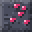 | Gold sword | Tier: 5 of 9; Damage: 30; Attack speed: 2.9 per second; Reach: 27.6; Knockback: 170 | 10 Gold bar, 2 Sticks at workbench; Blacksmith 700c | 140c |
| Diamond sword | Tier: 6 of 9; Damage: 36; Attack speed: 3.0 per second; Reach: 28.8; Knockback: 175 | 8 Diamond, 2 Sticks at workbench; Blacksmith 800c | 160c | |
| Storm sword | Tier: 7 of 9; Damage: 39; Attack speed: 3.0 per second; Reach: 30; Knockback: 177.5 | 9 Storm bar, 2 Sticks at workbench; Blacksmith 1088c | 218c | |
 | Mythril sword | Tier: 8 of 9; Damage: 42; Attack speed: 3.1 per second; Reach: 31.2; Knockback: 180 | 10 Mythril bar, 2 Sticks at workbench; Blacksmith 1375c | 275c |
 | Adamantite sword | Tier: 9 of 9; Damage: 58; Attack speed: 3.3 per second; Reach: 32.4; Knockback: 200 | 12 Adamantite bar, 2 Sticks at workbench; Blacksmith 3300c | 660c |
Maces
| Item | Stats | How to get it | Sell | |
|---|---|---|---|---|
| Wooden mace | Tier: 1 of 8; Damage: 22; Attack speed: 1.2 per second; Reach: 26; Knockback: 280 | Blacksmith 40c | 8c | |
| Silver mace | Tier: 2 of 8; Damage: 29; Attack speed: 1.2 per second; Reach: 26.7; Knockback: 300 | 12 Silver bar, 2 Oak planks, 2 Sticks at workbench; Blacksmith 301c | 60c | |
| Iron mace | Tier: 3 of 8; Damage: 36; Attack speed: 1.3 per second; Reach: 27.3; Knockback: 320 | 12 Iron bar, 2 Oak planks, 2 Sticks at workbench; Blacksmith 421c | 84c | |
| Gold mace | Tier: 4 of 8; Damage: 50; Attack speed: 1.3 per second; Reach: 28.6; Knockback: 360 | 14 Gold bar, 2 Oak planks, 2 Sticks at workbench; Blacksmith 981c | 196c | |
| Diamond mace | Tier: 5 of 8; Damage: 59; Attack speed: 1.4 per second; Reach: 29.9; Knockback: 370 | 11 Diamond, 2 Oak planks, 2 Sticks at workbench; Blacksmith 1101c | 220c | |
| Storm mace | Tier: 6 of 8; Damage: 63.5; Attack speed: 1.4 per second; Reach: 31.2; Knockback: 375 | 13 Storm bar, 2 Oak planks, 2 Sticks at workbench; Blacksmith 1514c | 303c | |
| Mythril mace | Tier: 7 of 8; Damage: 68; Attack speed: 1.4 per second; Reach: 32.5; Knockback: 380 | 14 Mythril bar, 2 Oak planks, 2 Sticks at workbench; Blacksmith 1926c | 385c | |
| Adamantite mace | Tier: 8 of 8; Damage: 90; Attack speed: 1.4 per second; Reach: 33.8; Knockback: 420 | 16 Adamantite bar, 2 Oak planks, 2 Sticks at workbench; Blacksmith 4401c | 880c |
Daggers
| Item | Stats | How to get it | Sell | |
|---|---|---|---|---|
| Bone daggers | Tier: 1 of 8; Damage: 8; Attack speed: 5.3 per second; Reach: 20; Knockback: 80 | 4 Bone, 2 Oak planks, 2 Sticks at workbench; Blacksmith 5c | 2c | |
| Silver daggers | Tier: 2 of 8; Damage: 10; Attack speed: 5.3 per second; Reach: 20.5; Knockback: 85 | 6 Silver bar, 2 Sticks at workbench; Blacksmith 150c | 30c | |
 | Iron daggers | Tier: 3 of 8; Damage: 12; Attack speed: 5.6 per second; Reach: 21; Knockback: 90 | 6 Iron bar, 2 Sticks at workbench; Blacksmith 210c | 42c |
 | Gold daggers | Tier: 4 of 8; Damage: 18; Attack speed: 5.9 per second; Reach: 22; Knockback: 100 | 7 Gold bar, 2 Sticks at workbench; Blacksmith 490c | 98c |
 | Diamond daggers | Tier: 5 of 8; Damage: 21.5; Attack speed: 5.9 per second; Reach: 23; Knockback: 105 | 6 Diamond, 2 Sticks at workbench; Blacksmith 600c | 120c |
 | Storm daggers | Tier: 6 of 8; Damage: 23.25; Attack speed: 5.9 per second; Reach: 24; Knockback: 107.5 | 6 Storm bar, 2 Sticks at workbench; Blacksmith 782c | 156c |
 | Mythril daggers | Tier: 7 of 8; Damage: 25; Attack speed: 6.3 per second; Reach: 25; Knockback: 110 | 7 Mythril bar, 2 Sticks at workbench; Blacksmith 963c | 193c |
| Adamantite daggers | Tier: 8 of 8; Damage: 35; Attack speed: 6.7 per second; Reach: 26; Knockback: 120 | 8 Adamantite bar, 2 Sticks at workbench; Blacksmith 2200c | 440c |
Bows
| Item | Stats | How to get it | Sell | |
|---|---|---|---|---|
 | Wooden bow | Tier: 1 of 8; Damage: 12; Attack speed: 2.0 per second; Shot speed: 430 | Blacksmith 40c | 8c |
 | Silver bow | Tier: 2 of 8; Damage: 14.5; Attack speed: 2.0 per second; Shot speed: 465 | 6 Silver bar, 6 Oak planks, 2 Sticks at workbench; Blacksmith 152c | 30c |
 | Iron bow | Tier: 3 of 8; Damage: 17; Attack speed: 2.0 per second; Shot speed: 500 | 6 Iron bar, 6 Oak planks, 2 Sticks at workbench; Blacksmith 212c | 42c |
| Gold bow | Tier: 4 of 8; Damage: 25; Attack speed: 2.2 per second; Shot speed: 560 | 8 Gold bar, 6 Oak planks, 2 Sticks at workbench; Blacksmith 562c | 112c | |
 | Diamond bow | Tier: 5 of 8; Damage: 30; Attack speed: 2.3 per second; Shot speed: 580 | 6 Diamond, 6 Oak planks, 2 Sticks at workbench; Blacksmith 602c | 120c |
| Storm bow | Tier: 6 of 8; Damage: 32.5; Attack speed: 2.3 per second; Shot speed: 590 | 7 Storm bar, 6 Oak planks, 2 Sticks at workbench; Blacksmith 852c | 170c | |
 | Mythril bow | Tier: 7 of 8; Damage: 35; Attack speed: 2.4 per second; Shot speed: 600 | 8 Mythril bar, 6 Oak planks, 2 Sticks at workbench; Blacksmith 1102c | 220c |
 | Adamantite bow | Tier: 8 of 8; Damage: 48; Attack speed: 2.5 per second; Shot speed: 640; Special: homing shots | 10 Adamantite bar, 6 Oak planks, 2 Sticks at workbench; Blacksmith 2752c | 550c |
Staffs
| Item | Stats | How to get it | Sell | |
|---|---|---|---|---|
 | Wooden staff | Tier: 1 of 7; Damage: 14; Attack speed: 2.2 per second; Mana per cast: 6; Shot speed: 380 | 10 Oak planks, 1 Emerald, 2 Sticks at workbench; Blacksmith 48c | 10c |
| Silver staff | Tier: 2 of 7; Damage: 18; Attack speed: 2.3 per second; Mana per cast: 6.5; Shot speed: 400 | 8 Silver bar, 2 Sticks, 1 Amethyst at workbench; Blacksmith 230c | 46c | |
| Gold staff | Tier: 3 of 7; Damage: 22; Attack speed: 2.4 per second; Mana per cast: 7; Shot speed: 420 | 6 Gold bar, 3 Emerald, 2 Sticks at workbench; Blacksmith 555c | 111c | |
| Diamond staff | Tier: 4 of 7; Damage: 27; Attack speed: 2.4 per second; Mana per cast: 7.5; Shot speed: 440 | 6 Diamond, 2 Ruby, 2 Sticks at workbench; Blacksmith 750c | 150c | |
| Storm staff | Tier: 5 of 7; Damage: 29.5; Attack speed: 2.4 per second; Mana per cast: 7.75; Shot speed: 450 | 7 Storm bar, 2 Ruby, 2 Sticks at workbench; Blacksmith 1000c | 200c | |
| Mythril staff | Tier: 6 of 7; Damage: 32; Attack speed: 2.5 per second; Mana per cast: 8; Shot speed: 460 | 8 Mythril bar, 2 Ruby, 2 Sticks at workbench; Blacksmith 1250c | 250c | |
| Adamantite staff | Tier: 7 of 7; Damage: 45; Attack speed: 2.6 per second; Mana per cast: 10; Shot speed: 500; Special: homing shots | 10 Adamantite bar, 3 Ruby, 2 Sticks at workbench; Blacksmith 2975c | 595c |
Special and rare weapons
| Item | Stats | How to get it | Sell | |
|---|---|---|---|---|
| Wraith blade | Damage: 40; Attack speed: 3.0 per second; Reach: 32; Knockback: 180 | Ghoul drop for knights | 10c | |
 | Grave maul | Damage: 64; Attack speed: 1.4 per second; Reach: 30; Knockback: 380 | Ghoul drop for macebearers | 10c |
| Phantom bow | Damage: 33; Attack speed: 2.3 per second; Shot speed: 650 | Ghoul drop for archers | 10c | |
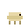 | Soul staff | Damage: 30; Attack speed: 2.5 per second; Mana per cast: 8; Shot speed: 520 | Ghoul drop for wizards | 10c |
| Shade daggers | Damage: 23; Attack speed: 6.3 per second; Reach: 26; Knockback: 110 | Ghoul drop for beastmasters | 10c | |
 | Sky staff | Damage: 58; Attack speed: 2.9 per second; Mana per cast: 9; Shot speed: 560 | The Archmage | 10c |
 | Magma staff | Damage: 52; Attack speed: 2.8 per second; Mana per cast: 9; Shot speed: 520; Special: sets enemies on fire | The Magma Wizard | 10c |
 | Sky Ranger's bow | Damage: 62; Attack speed: 2.8 per second; Shot speed: 720 | The Sky Ranger | 10c |
| Magma blade | Damage: 70; Attack speed: 2.9 per second; Reach: 48; Knockback: 200; Special: sets enemies on fire | The Magma Knight | 10c | |
 | Fire bow | Damage: 32; Attack speed: 2.3 per second; Shot speed: 620; Special: burning arrows | 1 Iron bow, 1 Gold bow, 1 Diamond bow, 4 Ruby at workbench | 10c |
 | Blast bow | Damage: 44; Attack speed: 1.4 per second; Shot speed: 560; Special: exploding arrows | 1 Iron bow, 1 Gold bow, 1 Diamond bow, 4 Emerald at workbench | 10c |
 | Tri-shot bow | Damage: 24; Attack speed: 2.0 per second; Shot speed: 620; Special: fires 3 arrows | 1 Iron bow, 1 Gold bow, 1 Diamond bow, 4 Sapphire at workbench | 10c |
| Tempest staff | Damage: 27; Attack speed: 2.4 per second; Mana per cast: 10; Shot speed: 600; Special: lightning chains to 2 more enemies | 1 Silver staff, 1 Gold staff, 1 Diamond staff, 4 Sapphire at workbench | 10c | |
| Ward staff | Damage: 0; Attack speed: 0.1 per second; Mana per cast: 30; Special: shields you and nearby allies | 1 Silver staff, 1 Gold staff, 1 Diamond staff, 4 Emerald at workbench | 10c | |
| Ember staff | Damage: 29; Attack speed: 2.4 per second; Mana per cast: 9; Shot speed: 480; Special: sets enemies on fire | 1 Silver staff, 1 Gold staff, 1 Diamond staff, 4 Ruby at workbench | 10c | |
 | Tidebond daggers | Damage: 28; Attack speed: 5.0 per second; Reach: 22; Knockback: 90 | The Kraken's sunken treasure | 10c |
 | Grukk's war maul | Damage: 100; Attack speed: 1.4 per second; Reach: 32; Knockback: 520 | Grukk the Ogre King drops it when he falls | 600c |
 | Kraken fang daggers | Damage: 48; Attack speed: 7.1 per second; Reach: 28; Knockback: 120 | The Kraken drops it when slain (stronger than the Tidebond daggers from its treasure chest) | 600c |
 | Scaleforged sword | Damage: 78; Attack speed: 3.3 per second; Reach: 40; Knockback: 220; Special: sets enemies on fire | Vorthax the dragon drops the scaleforged weapon of your class (this one for the knight) | 900c |
| Scaleforged bow | Damage: 62; Attack speed: 2.6 per second; Shot speed: 700; Special: homing shots; Special: sets enemies on fire | Vorthax the dragon drops the scaleforged weapon of your class (this one for the archer) | 900c | |
 | Scaleforged mace | Damage: 120; Attack speed: 1.4 per second; Reach: 32; Knockback: 480; Special: sets enemies on fire | Vorthax the dragon drops the scaleforged weapon of your class (this one for the macebearer) | 900c |
| Scaleforged staff | Damage: 58; Attack speed: 2.8 per second; Mana per cast: 9; Shot speed: 540; Special: homing shots; Special: sets enemies on fire | Vorthax the dragon drops the scaleforged weapon of your class (this one for the wizard) | 900c | |
 | Scaleforged daggers | Damage: 46; Attack speed: 6.7 per second; Reach: 28; Knockback: 120; Special: sets enemies on fire | Vorthax the dragon drops the scaleforged weapon of your class (this one for the beastmaster) | 900c |
 | Void bow | Damage: 31; Attack speed: 2.3 per second; Shot speed: 620 | 1 Iron bow, 1 Gold bow, 1 Diamond bow, 4 Amethyst at workbench | 260c |
 | Void staff | Damage: 28; Attack speed: 2.4 per second; Mana per cast: 8; Shot speed: 500 | 1 Silver staff, 1 Gold staff, 1 Diamond staff, 4 Amethyst at workbench | 260c |
 | Ember glaive | Damage: 37.8; Attack speed: 3.0 per second; Reach: 28.8; Knockback: 175; Special: sets enemies on fire | 1 Iron sword, 1 Gold sword, 1 Diamond sword, 4 Ruby at workbench | 260c |
 | Frost glaive | Damage: 37.8; Attack speed: 3.0 per second; Reach: 28.8; Knockback: 175 | 1 Iron sword, 1 Gold sword, 1 Diamond sword, 4 Sapphire at workbench | 260c |
 | Verdant glaive | Damage: 37.8; Attack speed: 3.0 per second; Reach: 28.8; Knockback: 175 | 1 Iron sword, 1 Gold sword, 1 Diamond sword, 4 Emerald at workbench | 260c |
 | Void glaive | Damage: 37.8; Attack speed: 3.0 per second; Reach: 28.8; Knockback: 350 | 1 Iron sword, 1 Gold sword, 1 Diamond sword, 4 Amethyst at workbench | 260c |
| Ember flail | Damage: 62; Attack speed: 1.4 per second; Reach: 29.9; Knockback: 370; Special: sets enemies on fire | 1 Iron mace, 1 Gold mace, 1 Diamond mace, 4 Ruby at workbench | 260c | |
 | Frost flail | Damage: 62; Attack speed: 1.4 per second; Reach: 29.9; Knockback: 370 | 1 Iron mace, 1 Gold mace, 1 Diamond mace, 4 Sapphire at workbench | 260c |
| Verdant flail | Damage: 62; Attack speed: 1.4 per second; Reach: 29.9; Knockback: 370 | 1 Iron mace, 1 Gold mace, 1 Diamond mace, 4 Emerald at workbench | 260c | |
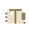 | Void flail | Damage: 62; Attack speed: 1.4 per second; Reach: 29.9; Knockback: 740 | 1 Iron mace, 1 Gold mace, 1 Diamond mace, 4 Amethyst at workbench | 260c |
 | Ember kunai | Damage: 22.6; Attack speed: 5.9 per second; Reach: 23; Knockback: 105; Special: sets enemies on fire | 1 Iron daggers, 1 Gold daggers, 1 Diamond daggers, 4 Ruby at workbench | 260c |
| Frost kunai | Damage: 22.6; Attack speed: 5.9 per second; Reach: 23; Knockback: 105 | 1 Iron daggers, 1 Gold daggers, 1 Diamond daggers, 4 Sapphire at workbench | 260c | |
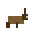 | Verdant kunai | Damage: 22.6; Attack speed: 5.9 per second; Reach: 23; Knockback: 105 | 1 Iron daggers, 1 Gold daggers, 1 Diamond daggers, 4 Emerald at workbench | 260c |
 | Void kunai | Damage: 22.6; Attack speed: 5.9 per second; Reach: 23; Knockback: 210 | 1 Iron daggers, 1 Gold daggers, 1 Diamond daggers, 4 Amethyst at workbench | 260c |
Pickaxes
| Item | Stats | How to get it | Sell | |
|---|---|---|---|---|
 | Wooden pickaxe | Tier: 1 of 8; Mining power: 1; Work speed: 0.6x | 6 Oak planks, 2 Sticks at workbench; Blacksmith 2c | 1c |
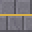 | Silver pickaxe | Tier: 2 of 8; Mining power: 1; Work speed: 1.4x | 10 Silver bar, 3 Oak planks, 2 Sticks at workbench; Blacksmith 251c | 50c |
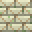 | Iron pickaxe | Tier: 3 of 8; Mining power: 2; Work speed: 2.2x | 10 Iron bar, 3 Oak planks, 2 Sticks at workbench; Blacksmith 351c | 70c |
 | Gold pickaxe | Tier: 4 of 8; Mining power: 3; Work speed: 3.8x | 12 Gold bar, 3 Oak planks, 2 Sticks at workbench; Blacksmith 841c | 168c |
 | Diamond pickaxe | Tier: 5 of 8; Mining power: 4; Work speed: 4.9x | 10 Diamond, 3 Oak planks, 2 Sticks at workbench; Blacksmith 1001c | 200c |
 | Storm pickaxe | Tier: 6 of 8; Mining power: 5; Work speed: 5.45x | 11 Storm bar, 3 Oak planks, 2 Sticks at workbench; Blacksmith 1326c | 265c |
| Mythril pickaxe | Tier: 7 of 8; Mining power: 6; Work speed: 6x | 12 Mythril bar, 3 Oak planks, 2 Sticks at workbench; Blacksmith 1651c | 330c | |
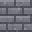 | Adamantite pickaxe | Tier: 8 of 8; Mining power: 7; Work speed: 14x | 14 Adamantite bar, 3 Oak planks, 2 Sticks at workbench; Blacksmith 3851c | 770c |
Axes (chop trees)
| Item | Stats | How to get it | Sell | |
|---|---|---|---|---|
 | Wooden axe | Tier: 1 of 8; Work speed: 0.6x | 5 Oak planks, 2 Sticks at workbench; Blacksmith 2c | 1c |
 | Silver axe | Tier: 2 of 8; Work speed: 1.3x | 10 Silver bar, 3 Oak planks, 2 Sticks at workbench; Blacksmith 251c | 50c |
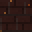 | Iron axe | Tier: 3 of 8; Work speed: 2x | 10 Iron bar, 3 Oak planks, 2 Sticks at workbench; Blacksmith 351c | 70c |
 | Gold axe | Tier: 4 of 8; Work speed: 3.4x | 12 Gold bar, 3 Oak planks, 2 Sticks at workbench; Blacksmith 841c | 168c |
 | Diamond axe | Tier: 5 of 8; Work speed: 4.45x | 11 Diamond, 3 Oak planks, 2 Sticks at workbench; Blacksmith 1101c | 220c |
 | Storm axe | Tier: 6 of 8; Work speed: 4.97x | 13 Storm bar, 3 Oak planks, 2 Sticks at workbench; Blacksmith 1514c | 303c |
 | Mythril axe | Tier: 7 of 8; Work speed: 5.5x | 14 Mythril bar, 3 Oak planks, 2 Sticks at workbench; Blacksmith 1926c | 385c |
 | Adamantite axe | Tier: 8 of 8; Work speed: 11x | 16 Adamantite bar, 3 Oak planks, 2 Sticks at workbench; Blacksmith 4401c | 880c |
Hoes (farming)
| Item | Stats | How to get it | Sell | |
|---|---|---|---|---|
 | Wooden hoe | Tier: 1 of 8; Work speed: 0.6x | 4 Oak planks, 2 Sticks at workbench; Blacksmith 1c | - |
| Silver hoe | Tier: 2 of 8; Work speed: 1.3x | 8 Silver bar, 3 Oak planks, 2 Sticks at workbench; Blacksmith 201c | 40c | |
| Iron hoe | Tier: 3 of 8; Work speed: 2x | 8 Iron bar, 3 Oak planks, 2 Sticks at workbench; Blacksmith 281c | 56c | |
 | Gold hoe | Tier: 4 of 8; Work speed: 3.4x | 10 Gold bar, 3 Oak planks, 2 Sticks at workbench; Blacksmith 701c | 140c |
 | Diamond hoe | Tier: 5 of 8; Work speed: 4.45x | 10 Diamond, 3 Oak planks, 2 Sticks at workbench; Blacksmith 1001c | 200c |
| Storm hoe | Tier: 6 of 8; Work speed: 4.97x | 11 Storm bar, 3 Oak planks, 2 Sticks at workbench; Blacksmith 1326c | 265c | |
 | Mythril hoe | Tier: 7 of 8; Work speed: 5.5x | 12 Mythril bar, 3 Oak planks, 2 Sticks at workbench; Blacksmith 1651c | 330c |
 | Adamantite hoe | Tier: 8 of 8; Work speed: 11x | 14 Adamantite bar, 3 Oak planks, 2 Sticks at workbench; Blacksmith 3851c | 770c |
Hammers (back walls, shaping)
| Item | Stats | How to get it | Sell | |
|---|---|---|---|---|
 | Wooden hammer | Tier: 1 of 8; Work speed: 0.6x | 5 Oak planks, 2 Sticks at workbench; Blacksmith 2c | 1c |
 | Silver hammer | Tier: 2 of 8; Work speed: 1.3x | 9 Silver bar, 3 Oak planks, 2 Sticks at workbench; Blacksmith 226c | 45c |
 | Iron hammer | Tier: 3 of 8; Work speed: 2x | 9 Iron bar, 3 Oak planks, 2 Sticks at workbench; Blacksmith 316c | 63c |
 | Gold hammer | Tier: 4 of 8; Work speed: 3.4x | 11 Gold bar, 3 Oak planks, 2 Sticks at workbench; Blacksmith 771c | 154c |
 | Diamond hammer | Tier: 5 of 8; Work speed: 4.45x | 10 Diamond, 3 Oak planks, 2 Sticks at workbench; Blacksmith 1001c | 200c |
| Storm hammer | Tier: 6 of 8; Work speed: 4.97x | 12 Storm bar, 3 Oak planks, 2 Sticks at workbench; Blacksmith 1395c | 279c | |
 | Mythril hammer | Tier: 7 of 8; Work speed: 5.5x | 13 Mythril bar, 3 Oak planks, 2 Sticks at workbench; Blacksmith 1789c | 358c |
| Adamantite hammer | Tier: 8 of 8; Work speed: 11x | 15 Adamantite bar, 3 Oak planks, 2 Sticks at workbench; Blacksmith 4126c | 825c |
Fishing rods
| Item | Stats | How to get it | Sell | |
|---|---|---|---|---|
 | Wooden rod | Tier: 1 of 5; Fishing: better catches at higher tiers | 5 Oak planks, 1 Iron bar, 2 Sticks at workbench; Blacksmith 37c; Fisher 37c | 7c |
 | Silver rod | Tier: 2 of 5; Fishing: better catches at higher tiers | 6 Silver bar, 2 Oak planks, 2 Sticks at workbench; Blacksmith 151c | 30c |
| Iron rod | Tier: 3 of 5; Fishing: better catches at higher tiers | 6 Iron bar, 2 Oak planks, 2 Sticks at workbench; Blacksmith 211c; Fisher 211c | 42c | |
 | Gold rod | Tier: 4 of 5; Fishing: better catches at higher tiers | 6 Gold bar, 1 Pearl, 2 Sticks at workbench; Blacksmith 483c; Fisher 483c | 97c |
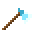 | Mythril rod | Tier: 5 of 5; Fishing: better catches at higher tiers | 6 Mythril bar, 1 Black pearl, 2 Sticks at workbench; Blacksmith 1050c | 210c |
Armor (worn automatically)
| Item | Stats | How to get it | Sell | |
|---|---|---|---|---|
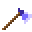 | Wooden armor | Tier: 1 of 8; Defense: +3 | 20 Oak planks, 4 Oak log at workbench | 10c |
 | Silver armor | Tier: 2 of 8; Defense: +4.5 | 15 Silver bar at workbench | 20c |
 | Iron armor | Tier: 3 of 8; Defense: +6 | 15 Iron bar at workbench | 30c |
 | Gold armor | Tier: 4 of 8; Defense: +12 | 18 Gold bar at workbench | 40c |
 | Diamond armor | Tier: 5 of 8; Defense: +15 | 14 Diamond at workbench | 50c |
 | Storm armor | Tier: 6 of 8; Defense: +16.5 | 16 Storm bar at workbench | 60c |
 | Mythril armor | Tier: 7 of 8; Defense: +18 | 18 Mythril bar at workbench | 70c |
| Adamantite armor | Tier: 8 of 8; Defense: +25; Special: immune to lava | 20 Adamantite bar at workbench | 80c |
Accessories and permanent gear
| Item | Stats | How to get it | Sell | |
|---|---|---|---|---|
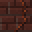 | Taming whistle | Bonus: Permanent: any class can tame animals. Each tame costs food: 1 for small animals, 2 for medium, 3 for big ones | 8 Oak planks, 4 Iron bar, 4 Apple at workbench; Dropped by goblin beastmaster; Beast trainer 80c | - |
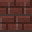 | Swift boots | Bonus: Run 15% faster | Jeweler 350c | - |
| Windstep boots | Bonus: Run 30% faster | 4 Gold bar, 4 Wool, 2 Emerald at workbench | - | |
 | Cloud charm | Bonus: Jump again in midair | 6 Gold bar, 4 Glass, 2 Amethyst at workbench | - |
| Nautilus mask | Bonus: A mask shaped from a nautilus shell: hold your breath 3 times longer | 8 Iron bar, 6 Glass at workbench; Shipwright 292c | - | |
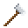 | Mermaid charm | Bonus: Breathe underwater and swim fast | 6 Mythril bar, 4 Emerald at workbench | - |
| Miner lantern | Bonus: Carry a brighter light | 4 Iron bar, 5 Torch at workbench; Shipwright 148c | - | |
| Sun amulet | Bonus: Carry a very bright light | 6 Gold bar, 2 Ruby, 2 Amethyst at workbench | - | |
| Mana ring | Bonus: Mana refills 50% faster | 4 Silver bar, 2 Emerald at workbench | - | |
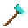 | Arcane ring | Bonus: Mana refills twice as fast | 6 Mythril bar, 3 Ruby at workbench | - |
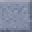 | Feather charm | Bonus: No fall damage | Sky chests | - |
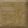 | Sky wings | Bonus: Hold W (on a phone, the Wings button) to fly up, steer left and right, hold down to dive. 10 seconds of flight; recharges on the ground. Let go and you fall | Sky chests | - |
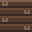 | Dragon amulet | Bonus: 10x health, flight, extra speed and no fall damage | Vorthax the dragon | - |
| Deck cannons I | Bonus: Your longships and warships fire cannons at enemy ships and sea monsters (warships fire two at a time) | 1 Cannon, 10 Iron bar, 20 Oak planks at siege workshop; Shipwright 1245c | - | |
| Deck cannons II | Bonus: Deck cannons fire faster and hit harder | 1 Cannon, 8 Gold bar, 20 Coal at siege workshop; Shipwright 1550c | - | |
 | Deck cannons III | Bonus: The fastest, strongest deck cannons | 2 Cannon, 6 Mythril bar, 30 Coal at siege workshop | - |
 | Grappling hook | Bonus: Fires straight where you aim and pulls you to the first block it hits, up to 10 blocks away. Press E (or use the Hook dial on a phone). If that block breaks, the hook comes loose and falls | 3 Iron bar, 3 Wool at workbench | - |
| Iron grappling hook | Bonus: Fires straight where you aim and pulls you to the first block it hits, up to 16 blocks away. Press E (or use the Hook dial on a phone). If that block breaks, the hook comes loose and falls | 4 Gold bar, 4 Wool at workbench | - | |
 | Mythril grappling hook | Bonus: Fires straight where you aim and pulls you to the first block it hits, up to 24 blocks away. Press E (or use the Hook dial on a phone). If that block breaks, the hook comes loose and falls | 4 Mythril bar, 4 Wool at workbench | - |
 | Dragon compass | Bonus: Its needle always points to the dragon's lair; shows which way it lies and how far | 1 Old compass, 2 Gold bar, 1 Ruby at workbench; Treasure chests (about 1 in 12), and always in the goblin warcamp's gold chest | 40c |
| Astrolabe | Bonus: A brass star-reckoner: shows the season, the weather and the days until the next season | 1 Old compass, 1 Silver bar, 1 Sapphire at workbench; Jeweler 220c | 30c | |
 | Bait pouch | Bonus: A leather pouch of live bait: fish bite 20% sooner | Fisher 300c | 75c |
 | Fisher's ring | Bonus: A gold ring set with sea glass: fish bite 35% sooner, and you keep the better of two catches | 3 Gold bar, 2 Sea glass, 1 Conch shell at workbench | 200c |
 | Lucky lure | Bonus: Fish bite 50% sooner, you keep the better of two catches, and one catch in five comes in double | 2 Golden fish, 3 Pearl, 2 Gold bar at workbench | 300c |
 | Cooling band | Bonus: You never catch fire | Jeweler 400c | 100c |
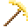 | Ward amulet | Bonus: You never catch fire or get slowed by frost | 3 Gold bar, 2 Sapphire, 2 Ruby at workbench | 200c |
| Dragon scale ward | Bonus: No burning, no frost slowing, no knockback, and lava hurts half as much | Found, mined or dropped | 300c | |
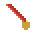 | Fleetfoot sash | Bonus: Double-tap left or right to dash 6 blocks (once every 1.2 seconds) | Jeweler 600c | 150c |
| Shadow cloak | Bonus: Double-tap left or right to dash 9 blocks, untouchable while dashing (once every 0.7 seconds) | 2 Kraken ink, 1 Black pearl, 3 Silver bar at workbench | 200c | |
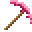 | Wayfinder stone | Bonus: Open the travel map anywhere (press M) and travel to any portal for free | 2 Gold bar, 1 Spirit gem, 2 Emerald at workbench | 100c |
Permanent upgrades
| Item | Stats | How to get it | Sell | |
|---|---|---|---|---|
 | Heart gem | Use: A cut red gem from deep clusters. Use it to raise your greatest health by 20 | Heart gems in the magma realm; sky chests; the Archmage | - |
 | Spirit gem | Use: A cut blue gem from deep clusters. Use it to raise your greatest mana by 20 | Spirit gems in the magma realm; sky chests; the Archmage | - |
 | Bottle of leaping | Use: Drink it to gain a permanent extra jump in the air | 1 in 25 burned-village and cave-hut chests | - |
 | Swiftness elixir I | Permanent: Permanently walk and run 10% faster | Sky and magma realm chests | - |
 | Swiftness elixir II | Permanent: Permanently walk and run 20% faster | Sky and magma realm chests | - |
 | Swiftness elixir III | Permanent: Permanently walk and run 30% faster | Realm bosses (if you lack it), sky and magma chests | - |
 | Sprint elixir I | Permanent: Sprinting becomes 45% faster than walking | Sky and magma realm chests | - |
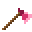 | Sprint elixir II | Permanent: Sprinting becomes 70% faster than walking | Sky and magma realm chests | - |
 | Sprint elixir III | Permanent: Sprinting becomes 75% faster than normal sprinting | Realm bosses (if you lack it), sky and magma chests | - |
 | Heart of vigor | Permanent: Permanently +20 max health. Price rises with each one | Herbalist from 1200c, rising each time | - |
 | Heart of the arcane | Permanent: Permanently +20 max mana. Price rises with each one | Herbalist from 1000c, rising each time | - |
| Sky feather I | Permanent: Wings fly for 15 seconds. Needs sky wings and the previous feather | Sky realm enemies, sky chests and the Sky Ranger (needs sky wings) | - | |
 | Sky feather II | Permanent: Wings fly for 20 seconds. Needs sky wings and the previous feather | Sky realm enemies, sky chests and the Sky Ranger (needs sky wings) | - |
 | Sky feather III | Permanent: Wings fly for 25 seconds. Needs sky wings and the previous feather | Sky realm enemies, sky chests and the Sky Ranger (needs sky wings) | - |
 | Sky feather IV | Permanent: Wings fly for 30 seconds. Needs sky wings and the previous feather | Sky realm enemies, sky chests and the Sky Ranger (needs sky wings) | - |
| Sky feather V | Permanent: Wings fly as long as you hold W or the Wings button. Needs sky wings and the previous feather | Sky realm enemies, sky chests and the Sky Ranger (needs sky wings) | - |
Food
| Item | Stats | How to get it | Sell | |
|---|---|---|---|---|
 | Apple | Heals: 15 | Cook 5c | 2c |
 | Healing potion | Heals: 70 | 2 Apple, 1 Glass by hand; 3 Herb, 1 Glass at furnace (makes 2); Cook 4c; Herbalist 4c | 2c |
 | Bread | Heals: 25 | 3 Wheat at furnace (makes 2); Cook 9c; Cook 41c for 5 | 4c |
 | Hearty stew | Heals: 45 | 1 Venison, 2 Apple at furnace; Cook 18c | 8c |
 | Bird meat | Heals: 12 | Found, mined or dropped | 2c |
 | Rabbit meat | Heals: 18 | Found, mined or dropped | 3c |
 | Venison | Heals: 32 | Cook 11c | 5c |
 | Pork chop | Heals: 30 | Cook 9c | 4c |
 | Bear steak | Heals: 50 | Dropped by cave bear | 8c |
 | Wolf meat | Heals: 22 | Found, mined or dropped | 4c |
 | Carrot | Heals: 10 | Found, mined or dropped | 2c |
 | Glowcap | Heals: 6 | Found, mined or dropped | 1c |
 | Raw fish | Heals: 8 | Dropped by piranha; Dropped by eel; Fishing | 3c |
 | Honey | Heals: 10 | Dropped by cave bear; Tap a full bee hive within reach (hives hang under tree leaves near flowers and fill each morning); bears carry it too | 2c |
 | Berries | Heals: 6 | Dropped by goblin | 1c |
 | Salmon | Heals: 12 | Fishing | 6c |
 | Herbal tonic | Heals: 45 | 2 Herb, 1 Berries at furnace; Herbalist 30c | 8c |
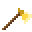 | Potato | Heals: 8 | Harvest ripe potatoes with a hoe (plant seed potatoes on tilled soil) | 1c |
 | Raw beef | Heals: 6 | Found, mined or dropped | 1c |
| Raw mutton | Heals: 5 | Found, mined or dropped | 1c | |
| Reef shark | Heals: 30 | Fishing | 25c | |
 | Great white shark | Heals: 50 | Fishing | 180c |
| Milk | Heals: 8 | Found, mined or dropped | 3c | |
 | Raw boar meat | Heals: 7 | Found, mined or dropped | 2c |
| Cooked boar meat | Heals: 22 | 1 Raw boar meat at furnace | 5c | |
 | Raw beaver meat | Heals: 6 | Found, mined or dropped | 2c |
 | Cooked beaver meat | Heals: 18 | 1 Raw beaver meat at furnace | 5c |
 | Raw hawk meat | Heals: 5 | Found, mined or dropped | 2c |
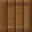 | Cooked hawk meat | Heals: 16 | 1 Raw hawk meat at furnace | 5c |
 | Raw eagle meat | Heals: 6 | Found, mined or dropped | 2c |
| Cooked eagle meat | Heals: 20 | 1 Raw eagle meat at furnace | 5c | |
| Raw owl meat | Heals: 5 | Found, mined or dropped | 2c | |
 | Cooked owl meat | Heals: 16 | 1 Raw owl meat at furnace | 5c |
 | Raw penguin meat | Heals: 6 | Found, mined or dropped | 2c |
 | Cooked penguin meat | Heals: 20 | 1 Raw penguin meat at furnace | 5c |
 | Sugar cake | Heals: 75 | 2 Sugar, 2 Wheat, 1 Egg, 1 Milk at furnace | 10c |
 | Berry tart | Heals: 50 | 3 Berries, 1 Sugar, 1 Wheat at furnace | 6c |
 | Sugar cookies | Heals: 14 | 1 Sugar, 1 Wheat, 1 Egg at furnace (makes 4) | 2c |
 | Candied apple | Heals: 30 | 1 Apple, 1 Sugar at furnace | 4c |
 | Golden fish feast | Heals: 110 | 1 Golden fish, 2 Herb at furnace | 70c |
| Tomato | Heals: 7 | Found, mined or dropped | 2c | |
| Corn | Heals: 8 | Found, mined or dropped | 3c | |
| Strawberry | Heals: 6 | Found, mined or dropped | 2c | |
| Onion | Heals: 5 | Found, mined or dropped | 2c | |
 | Cabbage | Heals: 8 | Found, mined or dropped | 3c |
 | Melon | Heals: 10 | Found, mined or dropped | 3c |
| Tomato soup | Heals: 30 | 2 Tomato, 1 Onion at furnace | 14c | |
 | Corn bread | Heals: 28 | 2 Corn, 1 Wheat at furnace | 12c |
 | Grilled corn | Heals: 14 | 1 Corn at furnace | 5c |
 | Strawberry tart | Heals: 26 | 3 Strawberry, 1 Wheat at furnace | 12c |
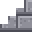 | Vegetable stew | Heals: 45 | 1 Carrot, 1 Potato, 1 Onion, 1 Cabbage at furnace | 20c |
 | Stuffed cabbage | Heals: 40 | 1 Cabbage, 1 Onion, 1 Pork chop at furnace | 18c |
 | Fruit salad | Heals: 32 | 1 Melon, 1 Strawberry, 1 Apple at furnace | 14c |
 | Thunderfin | Heals: 45 | Found, mined or dropped | 40c |
 | Tempest marlin | Heals: 60 | Found, mined or dropped | 70c |
 | Raw cloud mutton | Heals: 6 | Found, mined or dropped | 2c |
 | Cooked cloud mutton | Heals: 24 | 1 Raw cloud mutton at furnace; Cook 30c | 6c |
Cooked food
| Item | Stats | How to get it | Sell | |
|---|---|---|---|---|
| Cooked bird | Heals: 28 | 1 Bird meat at furnace | 5c | |
 | Roast rabbit | Heals: 36 | 1 Rabbit meat at furnace | 6c |
 | Venison steak | Heals: 60 | 1 Venison at furnace | 10c |
 | Cooked pork | Heals: 55 | 1 Pork chop at furnace | 9c |
 | Bear roast | Heals: 85 | 1 Bear steak at furnace | 14c |
 | Cooked wolf | Heals: 42 | 1 Wolf meat at furnace | 7c |
| Carrot soup | Heals: 40 | 2 Carrot, 1 Glowcap at furnace | 7c | |
 | Pumpkin pie | Heals: 70 | 1 Pumpkin, 2 Wheat, 1 Egg at furnace | 12c |
 | Roast carrots | Heals: 30 | 2 Carrot at furnace | 5c |
 | Harvest stew | Heals: 130 | 1 Carrot, 1 Pumpkin, 1 Wheat, 1 Venison at furnace; Cook 60c | 22c |
 | Grilled fish | Heals: 30 | 1 Raw fish at furnace; Fisher 12c | 5c |
 | Fish stew | Heals: 55 | 1 Raw fish, 1 Glowcap at furnace | 9c |
 | Mushroom soup | Heals: 35 | 2 Glowcap at furnace | 6c |
| Berry pie | Heals: 60 | 3 Berries, 1 Bread at furnace | 10c | |
 | Omelette | Heals: 40 | 2 Egg at furnace | 7c |
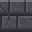 | Honey cake | Heals: 65 | 1 Honey, 1 Bread, 1 Egg at furnace | 11c |
 | Shark fin soup | Heals: 80 | 1 Shark fin, 1 Glowcap at furnace | 13c |
 | Hunter's feast | Heals: 120 | 1 Venison, 1 Pork chop, 1 Apple at furnace | 20c |
 | Cooked salmon | Heals: 50 | 1 Salmon at furnace; Fisher 21c | 8c |
 | Trout fillet | Heals: 45 | 1 Trout at furnace | 8c |
 | Grilled bass | Heals: 50 | 1 Bass at furnace | 8c |
 | Fish and chips | Heals: 75 | 1 Cod, 1 Bread at furnace | 13c |
 | Seared tuna | Heals: 70 | 1 Tuna at furnace | 12c |
| Pufferfish stew | Heals: 65 | 1 Pufferfish, 1 Glowcap at furnace | 11c | |
 | Swordfish steak | Heals: 95 | 1 Swordfish at furnace | 16c |
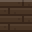 | Angler stew | Heals: 80 | 1 Anglerfish, 1 Glowcap at furnace | 13c |
 | Sushi platter | Heals: 110 | 1 Salmon, 1 Tuna, 1 Seaweed at furnace | 18c |
| Baked potato | Heals: 38 | 1 Potato at furnace | 6c | |
 | Steak | Heals: 45 | 1 Raw beef at furnace | 8c |
 | Roast mutton | Heals: 38 | 1 Raw mutton at furnace | 6c |
| Beef stew | Heals: 95 | 1 Raw beef, 1 Carrot, 1 Potato at furnace | 16c | |
| Mutton pie | Heals: 85 | 1 Raw mutton, 2 Wheat at furnace | 14c |
Potions
| Item | Stats | How to get it | Sell | |
|---|---|---|---|---|
 | Mana potion | Use: Drink it to get 60 mana back at once. Made from an emerald and glass, or bought from the cook | 1 Emerald, 1 Glass by hand; Cook 47c | - |
Boats
| Item | Stats | How to get it | Sell | |
|---|---|---|---|---|
 | Raft | Boat: Carries only you, no soldiers. Sits low, so sharks can still bite. | 12 Oak log by hand; Shipwright 12c | - |
 | Canoe | Boat: Carries you and 3 soldiers. The fastest boat, and safe from sharks. | 20 Oak planks, 2 Iron bar at workbench; Shipwright 75c | - |
| Rowboat | Boat: Carries you and 4 soldiers. | 30 Oak planks, 6 Iron bar at workbench; Shipwright 218c | - | |
 | Longship | Boat: Carries you and 11 soldiers and 1 war machine. | 60 Oak planks, 12 Iron bar, 4 Gold bar at workbench; Shipwright 715c | - |
 | Warship | Boat: Carries you and 20 soldiers and 3 war machines. | 100 Oak planks, 20 Iron bar, 10 Gold bar, 6 Mythril bar at workbench; Shipwright 2250c | - |
| Skiff | Boat: Fast and light: you and 3 soldiers. The quickest boat on the sea. | Shipwright 90c | - | |
| Cutter | Boat: Fast: you and 6 soldiers, quicker than a longship. | Shipwright 380c | - | |
 | Sloop | Boat: Well rounded: you, 8 soldiers and 1 war machine. | Shipwright 620c | - |
| Galleon | Boat: Heavy and slow: you, 20 soldiers and 4 war machines, behind a thick hull (a fifth less damage aboard). | Shipwright 2500c | - | |
| Ironclad | Boat: The heaviest ship: you, 20 soldiers and 5 war machines, iron-plated (a third less damage aboard). | Shipwright 2800c | - |
War machines
| Item | Stats | How to get it | Sell | |
|---|---|---|---|---|
| Ballista | Use: War machine: long-range bolts | 20 Oak planks, 8 Iron bar at siege workshop; War engineer 285c | - | |
 | Cannon | Use: War machine: exploding cannonballs | 20 Iron bar, 10 Coal, 2 Gold bar at siege workshop; War engineer 890c | - |
 | Trebuchet | Use: War machine: huge boulders from very far away | 40 Oak planks, 10 Oak log, 12 Iron bar at siege workshop; War engineer 440c | - |
Tools and other gear
| Item | Stats | How to get it | Sell | |
|---|---|---|---|---|
 | Recall mirror | Use: Teleports you home | 5 Glass, 3 Silver bar, 1 Emerald at workbench; Shipwright 130c; (the test world always gives you one) | - |
 | Growth dust | Use: Sprinkle on a plant, crop or sapling: it grows a stage now and 50% faster from then on | Herbalist 240c | 20c |
Charms
| Item | Stats | How to get it | Sell | |
|---|---|---|---|---|
 | Whetstone charm | Use: Melee attacks deal 10% more damage | Jeweler 1400c | 350c |
 | Eagle eye charm | Use: Arrows and spells fly 25% farther and hit 5% harder | A rare drop from strong enemies (about 1 in 3 from bosses and warlords, 1 in 25 from captains and big monsters, now and then from any monster you kill) and from treasure chests (about 1 in 20; 1 in 8 in better chests) | 500c |
| Quickhand charm | Use: You attack 10% faster | A rare drop from strong enemies (about 1 in 3 from bosses and warlords, 1 in 25 from captains and big monsters, now and then from any monster you kill) and from treasure chests (about 1 in 20; 1 in 8 in better chests) | 500c | |
 | Ironbark charm | Use: +3 defense | Jeweler 1200c | 300c |
| Vampire fang | Use: Heal 4% of the damage you deal | A rare drop from strong enemies (about 1 in 3 from bosses and warlords, 1 in 25 from captains and big monsters, now and then from any monster you kill) and from treasure chests (about 1 in 20; 1 in 8 in better chests) | 500c | |
 | Wind charm | Use: Move 8% faster | Jeweler 1500c | 375c |
| Merchant's charm | Use: Enemies drop 15% more coins | 8 Ancient coin, 1 Gold bar at workbench; Jeweler 1800c | 450c | |
 | Sage charm | Use: +25 maximum mana and mana refills 25% faster | A rare drop from strong enemies (about 1 in 3 from bosses and warlords, 1 in 25 from captains and big monsters, now and then from any monster you kill) and from treasure chests (about 1 in 20; 1 in 8 in better chests) | 500c |
 | Hunter charm | Use: Deal 15% more damage to monsters and wild animals | A rare drop from strong enemies (about 1 in 3 from bosses and warlords, 1 in 25 from captains and big monsters, now and then from any monster you kill) and from treasure chests (about 1 in 20; 1 in 8 in better chests) | 500c |
| Giant's belt | Use: +25 maximum health | A rare drop from strong enemies (about 1 in 3 from bosses and warlords, 1 in 25 from captains and big monsters, now and then from any monster you kill) and from treasure chests (about 1 in 20; 1 in 8 in better chests) | 500c | |
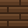 | Ember charm | Use: Your hits have a 10% chance to set enemies on fire | A rare drop from strong enemies (about 1 in 3 from bosses and warlords, 1 in 25 from captains and big monsters, now and then from any monster you kill) and from treasure chests (about 1 in 20; 1 in 8 in better chests) | 500c |
 | Thorn charm | Use: Enemies that hit you in melee take 15% of the damage back | A rare drop from strong enemies (about 1 in 3 from bosses and warlords, 1 in 25 from captains and big monsters, now and then from any monster you kill) and from treasure chests (about 1 in 20; 1 in 8 in better chests) | 500c |
| Fisher's charm | Use: Fish bite 25% sooner | Jeweler 900c | 225c | |
| Miner's charm | Use: Mine and chop 15% faster | Jeweler 1000c | 250c | |
| Dragon heart charm | Use: +8% damage and +15 maximum health | Vorthax the dragon drops it when slain | 500c | |
| Storm charm | Use: One in ten of your hits calls down a small bolt of lightning for 30 extra damage | 4 Storm bar, 1 Sapphire at workbench | 500c | |
 | Tidecrown | Use: +20 maximum health, +20 maximum mana, and mana refills 15% faster | 1 Sunken crown, 2 Pearl, 1 Black pearl at workbench; A rare drop from strong enemies (about 1 in 3 from bosses and warlords, 1 in 25 from captains and big monsters, now and then from any monster you kill) and from treasure chests (about 1 in 20; 1 in 8 in better chests) | 300c |
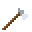 | War banner | Use: Everyone on your side within 8 blocks deals 15% more damage | 2 Gold bar, 1 Ruby, 4 Oak planks at workbench; Jeweler 1000c; A rare drop from strong enemies (about 1 in 3 from bosses and warlords, 1 in 25 from captains and big monsters, now and then from any monster you kill) and from treasure chests (about 1 in 20; 1 in 8 in better chests) | 250c |
 | Swift banner | Use: Everyone on your side within 8 blocks moves 10% faster | 2 Gold bar, 3 Wool, 4 Oak planks at workbench; Jeweler 1000c; A rare drop from strong enemies (about 1 in 3 from bosses and warlords, 1 in 25 from captains and big monsters, now and then from any monster you kill) and from treasure chests (about 1 in 20; 1 in 8 in better chests) | 250c |
 | Shield banner | Use: Everyone on your side within 8 blocks takes 15% less damage | 2 Gold bar, 1 Sapphire, 4 Oak planks at workbench; Jeweler 1000c; A rare drop from strong enemies (about 1 in 3 from bosses and warlords, 1 in 25 from captains and big monsters, now and then from any monster you kill) and from treasure chests (about 1 in 20; 1 in 8 in better chests) | 250c |
| Mending banner | Use: Everyone on your side within 8 blocks heals 2% of their health each second out of battle | 2 Gold bar, 1 Emerald, 4 Oak planks at workbench; Jeweler 1000c; A rare drop from strong enemies (about 1 in 3 from bosses and warlords, 1 in 25 from captains and big monsters, now and then from any monster you kill) and from treasure chests (about 1 in 20; 1 in 8 in better chests) | 250c | |
 | Drakeheart charm | Use: Fire burns you for half as long and half as hard (dragon fire, lava and burning ground too). The blow of the flames still lands in full | 12 Drake scale, 2 Ruby, 2 Gold bar at workbench; A rare drop from strong enemies (about 1 in 3 from bosses and warlords, 1 in 25 from captains and big monsters, now and then from any monster you kill) and from treasure chests (about 1 in 20; 1 in 8 in better chests) | 500c |
 | Cloudwool mantle | Use: +2 defense and +15 maximum health | 6 Cloud wool, 1 Gold bar at workbench; A rare drop from strong enemies (about 1 in 3 from bosses and warlords, 1 in 25 from captains and big monsters, now and then from any monster you kill) and from treasure chests (about 1 in 20; 1 in 8 in better chests) | 250c |
 | Swiftplume charm | Use: Move 10% faster and attack 5% faster | 4 Swift plume, 1 Gold bar at workbench; A rare drop from strong enemies (about 1 in 3 from bosses and warlords, 1 in 25 from captains and big monsters, now and then from any monster you kill) and from treasure chests (about 1 in 20; 1 in 8 in better chests) | 250c |
| Storm heart | Use: +20 maximum mana and arrows and spells hit 8% harder | 3 Storm essence, 1 Sapphire at workbench; A rare drop from strong enemies (about 1 in 3 from bosses and warlords, 1 in 25 from captains and big monsters, now and then from any monster you kill) and from treasure chests (about 1 in 20; 1 in 8 in better chests) | 250c | |
 | Skywood talisman | Use: Arrows and spells fly 15% farther and +10 maximum health | 6 Skywood planks, 1 Swift plume at workbench; A rare drop from strong enemies (about 1 in 3 from bosses and warlords, 1 in 25 from captains and big monsters, now and then from any monster you kill) and from treasure chests (about 1 in 20; 1 in 8 in better chests) | 250c |
 | Emberwood totem | Use: Your hits have an 8% chance to set enemies on fire, and +2 defense | 6 Emberwood planks, 1 Ruby at workbench; A rare drop from strong enemies (about 1 in 3 from bosses and warlords, 1 in 25 from captains and big monsters, now and then from any monster you kill) and from treasure chests (about 1 in 20; 1 in 8 in better chests) | 250c |
Boat upgrades
| Item | Stats | How to get it | Sell | |
|---|---|---|---|---|
 | Copper hull | Use: Sharks cannot bite you from any boat, and enemy cannonballs and sea creatures do 40% less damage while you sail | Shipwright 600c | 150c |
 | Swift sails | Use: Your boats sail 15% faster | Shipwright 500c | 125c |
 | Storm keel | Use: Storms no longer slow your boats | Shipwright 700c | 175c |
 | Iron ram | Use: Ramming an enemy ship at speed damages it | Shipwright 900c | 225c |
 | Crow's nest | Use: Deck cannons and soldiers aboard reach 30% farther | Shipwright 800c | 200c |
Boss tokens
| Item | Stats | How to get it | Sell | |
|---|---|---|---|---|
 | Arcane tome | Use: Calls the boss back to fight again. Use it at the top of the wizard tower | Dropped by the Archmage when it falls. Use it at the top of the wizard tower to call the boss back | 50c |
| Ember sigil | Use: Calls the boss back to fight again. Use it at the top of the magma fortress | Dropped by the Magma Wizard when it falls. Use it at the top of the magma fortress to call the boss back | 50c | |
 | Sky horn | Use: Calls the boss back to fight again. Use it in the sky castle throne room | Dropped by the Sky Ranger when it falls. Use it in the sky castle throne room to call the boss back | 50c |
 | Magma crown | Use: Calls the boss back to fight again. Use it in the magma keep throne room | Dropped by the Magma Knight when it falls. Use it in the magma keep throne room to call the boss back | 50c |
| Grukk's war drum | Use: Calls the boss back to fight again. Use it in Grukk's hall in the orc cave | Dropped by Grukk the Ogre King when it falls. Use it in Grukk's hall in the orc cave to call the boss back | 50c | |
 | Kraken lure | Use: Calls the boss back to fight again. Use it out on the sea where the Kraken lives | Dropped by the Kraken when it falls. Use it out on the sea where the Kraken lives to call the boss back | 50c |
| A Sailor's Nightmare | Use: A rotten lure of eel heads and black pearl that sailors swear the Kraken cannot resist. Take it out to sea where the Kraken lives and use it to drop it into the water. The Kraken only rises after it | 3 Raw fish, 2 Worm, 1 Black pearl at workbench; Fisher 150c | 40c |
Seeds
| Item | Stats | How to get it | Sell | |
|---|---|---|---|---|
| Wheat seeds | Use: Plant on tilled soil | 1 Wheat by hand (makes 2); Herbalist 2c for 3 | - | |
| Carrot seeds | Use: Plant on tilled soil | 1 Carrot by hand (makes 2); Herbalist 2c for 3 | - | |
| Pumpkin seeds | Use: Plant on tilled soil | 1 Pumpkin by hand (makes 4); Herbalist 1c for 2 | - | |
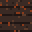 | Seed potato | Use: Plant on tilled soil | 1 Potato by hand (makes 2); Herbalist 2c for 3 | - |
 | Tomato seeds | Use: Plant on tilled soil | Herbalist 8c for 3 | 1c |
 | Corn seeds | Use: Plant on tilled soil | Herbalist 8c for 3 | 1c |
 | Strawberry seeds | Use: Plant on tilled soil | Herbalist 8c for 3 | 1c |
 | Onion sets | Use: Plant on tilled soil | Herbalist 8c for 3 | 1c |
 | Cabbage seeds | Use: Plant on tilled soil | Herbalist 8c for 3 | 1c |
 | Melon seeds | Use: Plant on tilled soil | Herbalist 8c for 3 | 1c |
Openable treasures
| Item | Stats | How to get it | Sell | |
|---|---|---|---|---|
 | Jewel box | Use: Open it for gems | Fishing | - |
 | Sealed chest | Use: Open it for treasure | Fishing | - |
| Message in a bottle | Use: Open it to read the message | Fishing | - |
Fish
| Item | Stats | How to get it | Sell | |
|---|---|---|---|---|
 | Trout | Heals: 6 | Fishing | 4c |
 | Bass | Heals: 7 | Fishing | 4c |
 | Cod | Heals: 7 | Fishing | 4c |
 | Tuna | Heals: 10 | Fishing | 6c |
 | Pufferfish | Heals: 3 | Fishing | 3c |
 | Swordfish | Heals: 12 | Fishing | 8c |
 | Anglerfish | Heals: 8 | Fishing | 5c |
Materials, gems, treasure and junk
| Item | Stats | How to get it | Sell | |
|---|---|---|---|---|
| Iron bar | Use: Smelted from 3 iron ore at a furnace. The everyday metal for iron tools, weapons, armor and boats | 3 Iron ore at furnace | 14c | |
 | Gold bar | Use: Smelted from 3 gold ore at a furnace. Makes gold tools, weapons and armor, and larger boats | 3 Gold ore at furnace; Dropped by goblin beastmaster; Dropped by ogre; Dropped by grukk the ogre king; Dropped by mummy; Dropped by scarab | 28c |
 | Ruby | Use: A red gem from ruby ore, imps and golems. Used in fire weapons, the fire rune, staffs and amulets | Jeweler 60c; Dropped by goblin beastmaster; Dropped by imp; Dropped by grukk the ogre king; Dropped by crystal golem; Dropped by thornback beetle; Dropped by sand wraith; Dropped by magma salamander; Dropped by ash wraith; Dropped by obsidian beetle; Dropped by ember_drake | 30c |
 | Emerald | Use: A green gem from emerald ore and mossy skeletons. Used in mana potions, staffs, the mana ring and the life rune | Jeweler 45c; Dropped by mossy skeleton; Dropped by crystal golem; Dropped by jade crab; Dropped by giant cave spider; Dropped by jade mantis; Dropped by moss troll | 18c |
 | Mythril bar | Use: Smelted from 3 mythril ore at the orc blast furnace. Makes mythril tools, weapons, armor and the warship | 3 Mythril ore at orc blast furnace | 55c |
 | Adamantite bar | Use: Smelted from 4 adamantite ore at the orc blast furnace. The strongest metal before storm: adamantite tools, weapons and armor | 4 Adamantite ore at orc blast furnace | 110c |
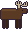 | Silver bar | Use: Smelted from 3 silver ore at a furnace. Makes silver armor and weapons, the mana ring and the recall mirror | 3 Silver ore at furnace | 10c |
 | Amethyst | Use: A purple gem from amethyst crystals in caves. Used in the cloud charm, the sun amulet, the mana rune and the silver staff | Jeweler 30c | 12c |
| Sapphire | Use: A blue gem from sapphire ore and crystal golems. Used in the tri-shot bow, the Tempest staff, the frost rune and storm charms | Jeweler 60c; Dropped by crystal golem; Dropped by azure spider; Dropped by thornback beetle; Dropped by deep stalker; Dropped by storm_wisp | 3c | |
| Wheat | Use: Harvested from wheat fields. Bake it into bread, pies and stews, plant it as seeds, or make thatch | Harvest ripe wheat with a hoe (plant wheat seeds on tilled soil); hired farmers bring it home too | 3c | |
| Shark fin | Use: Dropped by sharks. Cook it into shark fin soup | Dropped by shark | 10c | |
 | Egg | Use: Laid by birds in pens and bird cages. Cook it into omelettes, honey cake and pumpkin pie | Found, mined or dropped | 3c |
| Bone | Use: Dropped by skeletons and frost monsters. Makes bone daggers and black powder for bombs | Dropped by skeleton archer; Dropped by mossy skeleton; Dropped by frost archer; Dropped by frost brute; Dropped by cave bat; Dropped by fossil raptor; Dropped by giant cave spider; Dropped by bone hound; Dropped by deep stalker; Dropped by dune scorpion; Dropped by mummy; Dropped by vulture; Dropped by jackal | 3c | |
 | Golden fish | Use: A rare, shining catch. Roast it into a golden fish feast, or craft two with pearls into the Lucky lure | Fishing | 60c |
| Herb | Use: Picked from herb plants. Makes beds, herbal tonic and healing potions | Found, mined or dropped | 4c | |
 | Coral | Use: Sea treasure pulled up while fishing. Two make four coral blocks | Fishing | 8c |
| Pearl | Use: Sea treasure from fishing and sea expeditions. Used in the gold rod, the Lucky lure and the Tidecrown | Fishing | 25c | |
 | Black pearl | Use: A rare sea treasure. Used in the mythril rod, the Shadow cloak and the Tidecrown | Fishing | 90c |
 | Ancient coin | Use: An old coin from the seabed. Eight and a gold bar make a Merchant's charm | Fishing | 40c |
| Sunken crown | Use: A jewelled crown lost at sea. With pearls it becomes the Tidecrown charm | Fishing | 150c | |
| Old compass | Use: A brass compass from a sunken ship. Craft it into a Dragon compass or an Astrolabe | Fishing | 60c | |
 | Kraken ink | Use: Dark ink from the deep sea. Two, a black pearl and silver make the Shadow cloak | Fishing | 70c |
| Old boot | Use: Junk | Fishing | 1c | |
 | Tin can | Use: Junk | Fishing | 1c |
 | Rusty chain | Use: Junk | Fishing | 1c |
| Seaweed | Use: Worthless junk. Delete it in your bag | Fishing | - | |
 | Soggy paper | Use: Worthless junk. Delete it in your bag | Fishing | - |
 | Broken bottle | Use: Worthless junk. Delete it in your bag | Fishing | - |
| Diamond | Use: A rare gem from deep diamond ore. Makes diamond tools, weapons and armor and the keen rune | Dropped by grukk the ogre king; Diamond ore deep underground (from about 43% of the way down to the magma realm, gold pickaxe or better); Grukk the Ogre King; gold chests | 40c | |
| Sugar | Use: Pressed from sugar cane. Bake it into sugar cake, berry tart, sugar cookies and candied apples | 2 Sugar cane by hand (makes 2) | 2c | |
 | Sticks | Use: Handles for every tool and weapon | 2 Oak planks by hand (makes 4) | 3c |
 | Wool | Use: Shorn from sheep. Makes beds, rugs, paintings, grappling hooks and windstep boots | 2 Cloud wool at workbench (makes 2) | 3c |
 | Blossom koi | Use: A spring rarity from lakes and rivers. Final rod only | Fishing with the final rod in lakes and rivers in spring | 90c |
| Sunfish | Use: Basks in summer seas. Final rod only | Fishing with the final rod at sea in summer | 90c | |
 | Storm eel | Use: Rises in autumn storms. Final rod only | Fishing with the final rod during autumn storms | 110c |
 | Ice pike | Use: Bites in winter. Final rod only | Fishing with the final rod in winter | 100c |
| Moon jelly | Use: Glows in the sea at night. Final rod only | Fishing with the final rod at sea at night | 120c | |
 | Sea glass | Use: Smooth glass from the sea | Fishing | 12c |
 | Conch shell | Use: A big spiral shell | Fishing | 22c |
 | Nautilus shell | Use: A perfect shell from the deep. Final rod only | Fishing | 160c |
 | Storm bar | Use: Smelted from 3 storm ore at a furnace. Makes storm tools, weapons and armor, and the lightning rod | 3 Storm ore at furnace | 80c |
 | Black powder | Use: Made from coal and bone. Packed into bombs | 2 Coal, 1 Bone at workbench (makes 2); Demolitionist 22c for 4 | 2c |
 | Charcoal | Use: Wood burned in a furnace. With a stick it makes torches; coal works the same | 1 Oak log at furnace; 1 Emberwood log at furnace (makes 2) | 1c |
 | Grow meal | Use: Use it on a crop to grow it a stage, or on a sapling to grow a tree. Made from bones, or from wheat seeds, glowcaps and berries at a composter | 1 Bone by hand (makes 3); 6 Wheat seeds at composter (makes 2); 3 Glowcap at composter (makes 2); 4 Berries at composter (makes 2) | 2c |
 | Worm | Use: Dug up from dirt and grass. Fish bite sooner. Carry it while fishing: each cast uses one | Fisher 4c for 5 | 1c |
 | Grub | Use: Found in logs you chop. Bigger fish take it. Carry it while fishing: each cast uses one | Found, mined or dropped | 2c |
 | Cricket | Use: A cricket caught with a bug net in tall grass. Fish bite much sooner. Carry it while fishing: each cast uses one | Found, mined or dropped | 2c |
 | Sand flea | Use: A sand flea caught with a bug net on the beach. Treasure likes it. Carry it while fishing: each cast uses one | Found, mined or dropped | 2c |
| Glow fly | Use: A glow fly caught with a bug net near glowing mushrooms. Rare fish rise to its light. Carry it while fishing: each cast uses one | Found, mined or dropped | 4c | |
| Storm ray | Use: A wide ray that glides in storm surf; prized by traders. Only the storm rod catches it, in a storm | Found, mined or dropped | 90c | |
 | Volt jelly | Use: A jellyfish full of sparks; it glows in the dark. Only the storm rod catches it, in a storm | Found, mined or dropped | 60c |
 | Butterfly | Use: A bright butterfly caught with a bug net. Fish rise to its colours. Carry it while fishing: each cast uses one | Found, mined or dropped | 4c |
 | Bee | Use: A honey bee caught with a bug net. Fish bite sooner. Carry it while fishing: each cast uses one | Found, mined or dropped | 3c |
| Dragonfly | Use: A darting dragonfly caught with a bug net. Bigger fish take it. Carry it while fishing: each cast uses one | Found, mined or dropped | 6c | |
| Firefly | Use: A glowing firefly caught with a bug net. Rare fish rise to its light. Carry it while fishing: each cast uses one | Found, mined or dropped | 5c | |
 | Beetle | Use: A shiny beetle caught with a bug net. Bigger fish take it. Carry it while fishing: each cast uses one | Found, mined or dropped | 3c |
 | Cloud moth | Use: A moth as white as the clouds it lives in, caught with a bug net in the sky realm. The best fish rise to it. Carry it while fishing: each cast uses one | Found, mined or dropped | 14c |
| Sky skimmer | Use: A golden dragonfly that darts between the clouds, caught with a bug net. The best fish chase it. Carry it while fishing: each cast uses one | Found, mined or dropped | 14c | |
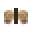 | Sun beetle | Use: A beetle with a shell like a sunrise, caught with a bug net in the sky realm. Treasure likes it. Carry it while fishing: each cast uses one | Found, mined or dropped | 15c |
 | Ember moth | Use: A moth that glows like a coal, caught with a bug net in the magma realm. The best fish rise to its light. Carry it while fishing: each cast uses one | Found, mined or dropped | 15c |
 | Cinder beetle | Use: A black beetle with an orange shell, caught with a bug net by the lava. Treasure likes it. Carry it while fishing: each cast uses one | Found, mined or dropped | 15c |
 | Ash wasp | Use: A grey wasp with orange stripes, caught with a bug net in the magma realm. The best fish bite at once. Carry it while fishing: each cast uses one | Found, mined or dropped | 14c |
 | Jade weevil | Use: A small green weevil from the jade caves, caught with a bug net. Bigger fish take it. Carry it while fishing: each cast uses one | Found, mined or dropped | 6c |
 | Rose moth | Use: A pink moth from the rose quartz caves, caught with a bug net. Bigger fish rise to it. Carry it while fishing: each cast uses one | Found, mined or dropped | 6c |
 | Azure midge | Use: A blue midge from the azure caves, caught with a bug net. Fish bite much sooner. Carry it while fishing: each cast uses one | Found, mined or dropped | 6c |
| Drip mite | Use: A grey mite from the dripstone caves, caught with a bug net. Treasure likes it. Carry it while fishing: each cast uses one | Found, mined or dropped | 6c | |
 | Root cricket | Use: A brown cricket from the root caves, caught with a bug net. Fish bite much sooner. Carry it while fishing: each cast uses one | Found, mined or dropped | 6c |
| Bone beetle | Use: A bone-white beetle from the fossil caves, caught with a bug net. Bigger fish take it. Carry it while fishing: each cast uses one | Found, mined or dropped | 6c | |
 | Lantern fly | Use: A fly with a green lantern from the overgrown caverns, caught with a bug net. Rare fish rise to its light. Carry it while fishing: each cast uses one | Found, mined or dropped | 8c |
 | Deer antlers | Use: Shed by bucks kept in a pen, or taken from a hunted buck. Two make an antler rod at a workbench | Shed by bucks in a pen (40% of mornings each) or dropped by a hunted buck (50%) | 14c |
| Drake scale | Use: A hard, warm scale from a drake of the obsidian caves | Dropped by ember_drake; Dropped by ash_wyvern; Dropped by obsidian_wyrmling | 30c | |
 | Cloud wool | Use: Soft wool from a cloud ram. Spin it into cloud blocks or plain wool, or use it in a cloud lamp | Found, mined or dropped | 3c |
 | Swift plume | Use: A long, pale feather from a zephyr swift. It carries the seed of a skywood tree | Found, mined or dropped | 4c |
| Storm essence | Use: The crackling heart of a storm wisp. It lights cloud lamps | Dropped by storm_wisp | 12c | |
| Red dye | Use: A little bottle of red dye. Used for stained glass, carpets, flags, tapestries, and to dye a bed's blanket (hold it and tap the bed) | 1 Red flower at workbench (makes 2); 2 Tomato at workbench; 2 Strawberry at workbench; 1 Ruby at furnace (makes 4); Herbalist 6c | 1c | |
| Orange dye | Use: A little bottle of orange dye. Used for stained glass, carpets, flags, tapestries, and to dye a bed's blanket (hold it and tap the bed) | 1 Red flower, 1 Yellow flower at workbench (makes 4); 1 Pumpkin at workbench (makes 2); 1 Red dye, 1 Yellow dye at workbench (makes 2); Herbalist 6c | 1c | |
 | Yellow dye | Use: A little bottle of yellow dye. Used for stained glass, carpets, flags, tapestries, and to dye a bed's blanket (hold it and tap the bed) | 1 Yellow flower at workbench (makes 2); 2 Corn at workbench; Herbalist 6c | 1c |
 | Lime dye | Use: A little bottle of lime dye. Used for stained glass, carpets, flags, tapestries, and to dye a bed's blanket (hold it and tap the bed) | 1 Seaweed at furnace; 1 Green dye, 1 White dye at workbench (makes 2); 2 Cabbage at workbench; Herbalist 9c | 1c |
 | Green dye | Use: A little bottle of green dye. Used for stained glass, carpets, flags, tapestries, and to dye a bed's blanket (hold it and tap the bed) | 1 Cactus at furnace (makes 2); 2 Herb at workbench; 1 Emerald at furnace (makes 4); Herbalist 6c | 1c |
 | Cyan dye | Use: A little bottle of cyan dye. Used for stained glass, carpets, flags, tapestries, and to dye a bed's blanket (hold it and tap the bed) | 1 Green dye, 1 Blue dye at workbench (makes 2); 1 Jade shard at workbench (makes 3); 1 Sea glass at workbench (makes 2); Herbalist 9c | 1c |
 | Light blue dye | Use: A little bottle of light blue dye. Used for stained glass, carpets, flags, tapestries, and to dye a bed's blanket (hold it and tap the bed) | 1 Blue dye, 1 White dye at workbench (makes 2); 1 Azure shard at workbench (makes 3); Herbalist 9c | 1c |
 | Blue dye | Use: A little bottle of blue dye. Used for stained glass, carpets, flags, tapestries, and to dye a bed's blanket (hold it and tap the bed) | 1 Blue flower at workbench (makes 2); 1 Sapphire at furnace (makes 4); Herbalist 6c | 1c |
 | Purple dye | Use: A little bottle of purple dye. Used for stained glass, carpets, flags, tapestries, and to dye a bed's blanket (hold it and tap the bed) | 2 Berries at workbench; 1 Red dye, 1 Blue dye at workbench (makes 2); 1 Amethyst at furnace (makes 4); Herbalist 6c | 1c |
 | Magenta dye | Use: A little bottle of magenta dye. Used for stained glass, carpets, flags, tapestries, and to dye a bed's blanket (hold it and tap the bed) | 1 Purple dye, 1 Pink dye at workbench (makes 2); 2 Onion at workbench; Herbalist 9c | 1c |
 | Pink dye | Use: A little bottle of pink dye. Used for stained glass, carpets, flags, tapestries, and to dye a bed's blanket (hold it and tap the bed) | 1 Red dye, 1 White dye at workbench (makes 2); 1 Coral at workbench (makes 2); 1 Rose quartz at workbench (makes 3); Herbalist 6c | 1c |
 | Brown dye | Use: A little bottle of brown dye. Used for stained glass, carpets, flags, tapestries, and to dye a bed's blanket (hold it and tap the bed) | 1 Glowcap at workbench (makes 2); 1 Oak log at workbench; Herbalist 6c | 1c |
| Black dye | Use: A little bottle of black dye. Used for stained glass, carpets, flags, tapestries, and to dye a bed's blanket (hold it and tap the bed) | 1 Coal at workbench (makes 2); 1 Charcoal at workbench (makes 2); 1 Kraken ink at workbench (makes 8); Herbalist 6c | 1c | |
 | White dye | Use: A little bottle of white dye. Used for stained glass, carpets, flags, tapestries, and to dye a bed's blanket (hold it and tap the bed) | 1 Bone at workbench (makes 3); 1 Pearl at workbench (makes 4); Herbalist 6c | 1c |
 | Grey dye | Use: A little bottle of grey dye. Used for stained glass, carpets, flags, tapestries, and to dye a bed's blanket (hold it and tap the bed) | 1 Black dye, 1 White dye at workbench (makes 2); 2 Ash at workbench; Herbalist 9c | 1c |
 | Gold dye | Use: A little bottle of gold dye. Used for stained glass, carpets, flags, tapestries, and to dye a bed's blanket (hold it and tap the bed) | 1 Honey at workbench (makes 2); 1 Gold bar at furnace (makes 6); Herbalist 18c | 4c |
Stairs, slopes and half blocks
| Item | Stats | How to get it | Sell | |
|---|---|---|---|---|
 | Oak planks stairs | Use: Steps cut from oak planks | 3 Oak planks at workbench (makes 4) | - |
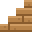 | Oak planks slope | Use: A sloped piece of oak planks for roofs and ramps | 2 Oak planks at workbench (makes 2) | - |
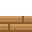 | Oak planks half block | Use: A half-height block of oak planks | 1 Oak planks at workbench (makes 2) | - |
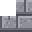 | Stone brick stairs | Use: Steps cut from stone brick | 3 Stone brick at workbench (makes 4) | - |
 | Stone brick slope | Use: A sloped piece of stone brick for roofs and ramps | 2 Stone brick at workbench (makes 2) | - |
 | Stone brick half block | Use: A half-height block of stone brick | 1 Stone brick at workbench (makes 2) | - |
 | Castle stone stairs | Use: Steps cut from castle stone | 3 Castle stone at workbench (makes 4) | - |
 | Castle stone slope | Use: A sloped piece of castle stone for roofs and ramps | 2 Castle stone at workbench (makes 2) | - |
 | Castle stone half block | Use: A half-height block of castle stone | 1 Castle stone at workbench (makes 2) | - |
 | Marble stairs | Use: Steps cut from marble | 3 Marble at workbench (makes 4) | - |
| Marble slope | Use: A sloped piece of marble for roofs and ramps | 2 Marble at workbench (makes 2) | - | |
 | Marble half block | Use: A half-height block of marble | 1 Marble at workbench (makes 2) | - |
 | Dark oak planks stairs | Use: Steps cut from dark oak planks | 3 Dark oak planks at workbench (makes 4) | - |
| Dark oak planks slope | Use: A sloped piece of dark oak planks for roofs and ramps | 2 Dark oak planks at workbench (makes 2) | - | |
 | Dark oak planks half block | Use: A half-height block of dark oak planks | 1 Dark oak planks at workbench (makes 2) | - |
 | Sandstone brick stairs | Use: Steps cut from sandstone brick | 3 Sandstone brick at workbench (makes 4) | - |
 | Sandstone brick slope | Use: A sloped piece of sandstone brick for roofs and ramps | 2 Sandstone brick at workbench (makes 2) | - |
 | Sandstone brick half block | Use: A half-height block of sandstone brick | 1 Sandstone brick at workbench (makes 2) | - |
 | Spruce planks stairs | Use: Steps cut from spruce planks | 3 Spruce planks at workbench (makes 4) | - |
 | Spruce planks slope | Use: A sloped piece of spruce planks for roofs and ramps | 2 Spruce planks at workbench (makes 2) | - |
 | Spruce planks half block | Use: A half-height block of spruce planks | 1 Spruce planks at workbench (makes 2) | - |
 | Birch planks stairs | Use: Steps cut from birch planks | 3 Birch planks at workbench (makes 4) | - |
 | Birch planks slope | Use: A sloped piece of birch planks for roofs and ramps | 2 Birch planks at workbench (makes 2) | - |
 | Birch planks half block | Use: A half-height block of birch planks | 1 Birch planks at workbench (makes 2) | - |
 | Palm planks stairs | Use: Steps cut from palm planks | 3 Palm planks at workbench (makes 4) | - |
| Palm planks slope | Use: A sloped piece of palm planks for roofs and ramps | 2 Palm planks at workbench (makes 2) | - | |
 | Palm planks half block | Use: A half-height block of palm planks | 1 Palm planks at workbench (makes 2) | - |
| Jungle planks stairs | Use: Steps cut from jungle planks | 3 Jungle planks at workbench (makes 4) | - | |
 | Jungle planks slope | Use: A sloped piece of jungle planks for roofs and ramps | 2 Jungle planks at workbench (makes 2) | - |
 | Jungle planks half block | Use: A half-height block of jungle planks | 1 Jungle planks at workbench (makes 2) | - |
 | Skywood planks stairs | Use: Steps cut from skywood planks | 3 Skywood planks at workbench (makes 4) | - |
 | Skywood planks slope | Use: A sloped piece of skywood planks for roofs and ramps | 2 Skywood planks at workbench (makes 2) | - |
| Skywood planks half block | Use: A half-height block of skywood planks | 1 Skywood planks at workbench (makes 2) | - | |
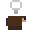 | Emberwood planks stairs | Use: Steps cut from emberwood planks | 3 Emberwood planks at workbench (makes 4) | - |
 | Emberwood planks slope | Use: A sloped piece of emberwood planks for roofs and ramps | 2 Emberwood planks at workbench (makes 2) | - |
 | Emberwood planks half block | Use: A half-height block of emberwood planks | 1 Emberwood planks at workbench (makes 2) | - |
Background walls
| Item | Stats | How to get it | Sell | |
|---|---|---|---|---|
 | Plank wall | Use: A back wall of plank. Place it behind you to close in a room | 1 Oak planks by hand (makes 4) | - |
 | Brick wall | Use: A back wall of brick. Place it behind you to close in a room | 1 Stone brick by hand (makes 4) | - |
| Stone wall | Use: A back wall of stone. Place it behind you to close in a room | 1 Stone by hand (makes 4) | - | |
 | Marble wall | Use: A back wall of marble. Place it behind you to close in a room | 1 Marble by hand (makes 4) | - |
 | Red brick wall | Use: A back wall of red brick. Place it behind you to close in a room | 1 Red brick by hand (makes 4) | - |
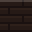 | Dark plank wall | Use: A back wall of dark plank. Place it behind you to close in a room | 1 Dark oak planks by hand (makes 4) | - |
 | Window wall | Use: A back wall of glass panes. The sky shows through it and daylight comes in | 1 Glass, 1 Sticks at workbench (makes 4) | - |
 | Spruce plank wall | Use: A back wall of spruce plank. Place it behind you to close in a room | 1 Spruce planks by hand (makes 4) | - |
 | Birch plank wall | Use: A back wall of birch plank. Place it behind you to close in a room | 1 Birch planks by hand (makes 4) | - |
 | Palm plank wall | Use: A back wall of palm plank. Place it behind you to close in a room | 1 Palm planks by hand (makes 4) | - |
 | Jungle plank wall | Use: A back wall of jungle plank. Place it behind you to close in a room | 1 Jungle planks by hand (makes 4) | - |
 | Snow wall | Use: A back wall of packed snow, like the walls of the caves under a snow island | 1 Snow at workbench (makes 4) | 1c |
 | Sand wall | Use: A back wall of packed sand, like the walls of the caves under the desert | 1 Sand at workbench (makes 4) | 1c |
 | Skywood plank wall | Use: A back wall of skywood planks | 1 Skywood planks by hand (makes 4) | - |
 | Emberwood plank wall | Use: A back wall of emberwood planks | 1 Emberwood planks by hand (makes 4) | - |
 | Red glass pane | Use: A back wall of red stained glass. Daylight comes through it in colour and it glows from behind | 1 Red stained glass, 1 Sticks at workbench (makes 4) | - |
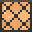 | Orange glass pane | Use: A back wall of orange stained glass. Daylight comes through it in colour and it glows from behind | 1 Orange stained glass, 1 Sticks at workbench (makes 4) | - |
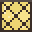 | Yellow glass pane | Use: A back wall of yellow stained glass. Daylight comes through it in colour and it glows from behind | 1 Yellow stained glass, 1 Sticks at workbench (makes 4) | - |
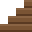 | Green glass pane | Use: A back wall of green stained glass. Daylight comes through it in colour and it glows from behind | 1 Green stained glass, 1 Sticks at workbench (makes 4) | - |
| Cyan glass pane | Use: A back wall of cyan stained glass. Daylight comes through it in colour and it glows from behind | 1 Cyan stained glass, 1 Sticks at workbench (makes 4) | - | |
 | Blue glass pane | Use: A back wall of blue stained glass. Daylight comes through it in colour and it glows from behind | 1 Blue stained glass, 1 Sticks at workbench (makes 4) | - |
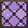 | Purple glass pane | Use: A back wall of purple stained glass. Daylight comes through it in colour and it glows from behind | 1 Purple stained glass, 1 Sticks at workbench (makes 4) | - |
 | Pink glass pane | Use: A back wall of pink stained glass. Daylight comes through it in colour and it glows from behind | 1 Pink stained glass, 1 Sticks at workbench (makes 4) | - |
 | Frosted glass pane | Use: A back wall of frosted glass. Daylight comes through it in colour and it glows from behind | 1 Frosted glass, 1 Sticks at workbench (makes 4) | - |
 | Harlequin glass pane | Use: A back wall of harlequin glass. Daylight comes through it in colour and it glows from behind | 1 Harlequin glass, 1 Sticks at workbench (makes 4) | - |
 | Rose glass pane | Use: A back wall of rose glass. Daylight comes through it in colour and it glows from behind | 1 Rose glass, 1 Sticks at workbench (makes 4) | - |
| Star glass pane | Use: A back wall of star glass. Daylight comes through it in colour and it glows from behind | 1 Star glass, 1 Sticks at workbench (makes 4) | - | |
 | Arcane wall | Use: A back wall of arcane brick, as inside the wizard tower | 1 Arcane brick at workbench (makes 4) | - |
 | Obsidian brick wall | Use: A back wall of obsidian brick with ember seams, as inside the magma wizard's fortress | 1 Obsidian brick at workbench (makes 4) | - |
 | Log wall | Use: A back wall of stacked logs, placed behind you like the other walls | 1 Oak log at workbench (makes 4) | - |
Blocks, furniture and stations
| Item | Stats | How to get it | Sell | |
|---|---|---|---|---|
 | Dirt | Use: Soft ground. Grass spreads onto it, and seeds grow in it once tilled | Found, mined or dropped | 1c |
 | Stone | Use: Plain rock, the bulk of the underground. Cut it into bricks and stairs | Found, mined or dropped | 1c |
 | Oak log | Use: Wood from an oak tree. Make planks from it at a workbench | Chop trees with an axe (or by hand); the logs drop where the tree falls | 2c |
| Oak planks | Use: Sawn oak for floors, walls and furniture | 1 Oak log by hand (makes 4); Shipwright 5c for 20 | 1c | |
 | Coal | Use: Black rock that burns. Torches and furnaces use it | Dropped by shale crawler; Dropped by ash_wyvern | 2c |
 | Iron ore | Use: Rock streaked with iron. Smelt it into iron bars at a furnace | Found, mined or dropped | 4c |
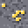 | Gold ore | Use: Needs an Iron pickaxe (tier 2) or better to mine. | Found, mined or dropped | 8c |
 | Sand | Use: Loose sand. It falls when nothing holds it up; smelt it into glass | Dropped by dune scorpion; Dropped by sand wraith; Dropped by scarab | 1c |
 | Stone brick | Use: Cut stone blocks for strong walls | 2 Stone at workbench; Shipwright 40c for 20 | 1c |
 | Torch | Use: A small flame for a wall or floor. Keeps the dark and some monsters away | 1 Sticks, 1 Charcoal by hand (makes 4); Shipwright 15c for 10 | - |
 | Obsidian | Use: Needs a Gold pickaxe (tier 3) or better to mine. | Dropped by magma skeleton; Dropped by magma salamander; Dropped by obsidian beetle; Dropped by ember_drake; Dropped by obsidian_wyrmling | 6c |
 | Green banner | Use: A green cloth banner | 2 Wool, 1 Oak planks at workbench | 1c |
| Blue banner | Use: A blue cloth banner | 2 Wool, 1 Oak planks at workbench | 1c | |
| Red banner | Use: A red cloth banner | 2 Wool, 1 Oak planks at workbench | 1c | |
 | Workbench | Use: Where most things are crafted. Stand near it to see its recipes | 10 Oak planks by hand | 1c |
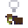 | Furnace | Use: Smelts ore into bars and cooks food. Stand near it to use it | 20 Stone, 4 Oak log, 3 Torch at workbench | 1c |
| Glass | Use: Clear glass that lets light through | 2 Sand at furnace; Shipwright 20c for 10 | 1c | |
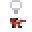 | Wood platform | Use: A thin wooden ledge you can jump up through and stand on | 1 Oak planks by hand (makes 2); Shipwright 3c for 20 | - |
 | Roof tiles | Use: Red clay tiles for a roof | 1 Stone, 1 Sand at furnace (makes 2); Shipwright 10c for 10 | - |
| Mythril ore | Use: Needs a Diamond pickaxe (tier 4) or better to mine. | Sky realm clouds, after the Sky Ranger falls | 16c | |
 | Adamantite ore | Use: Needs a Storm pickaxe (tier 5) or better to mine. | Magma realm, after both realm bosses fall | 26c |
 | Silver ore | Use: Rock with bright silver in it. Smelt it into silver bars | Found, mined or dropped | 3c |
 | Deepstone | Use: Dark, hard rock from far below the surface | Found, mined or dropped | 1c |
 | Glow mushroom | Use: A plant. Set it on solid ground. | 2 Glowcap by hand | 1c |
 | Marble | Use: Smooth white stone for fine halls and statues | Found, mined or dropped | 1c |
 | Granite | Use: Dark speckled stone | Found, mined or dropped | 1c |
 | Sandstone brick | Use: Cut sandstone, the building stone of the desert | 2 Sand at workbench (makes 2); 2 Sandstone at workbench (makes 2) | 1c |
 | Red brick | Use: Fired red bricks | 2 Dirt, 1 Stone at furnace (makes 2) | 1c |
| Dark oak planks | Use: Sawn dark oak, a deep brown wood | 1 Dark oak log by hand (makes 4); 1 Oak log, 1 Coal at workbench (makes 4) | 1c | |
 | Blue tile | Use: Glazed blue tiles | 2 Stone, 1 Glass at furnace (makes 2) | 1c |
 | Gold block | Use: Solid gold. Very heavy and very showy | 2 Gold bar at furnace | 1c |
 | Red stained glass | Use: Red stained glass, made at the furnace from glass and bricks or from sand and dye. It glows when light shines through it | 2 Glass, 1 Red brick at furnace (makes 2); 2 Sand, 1 Red dye at furnace | 1c |
 | Blue stained glass | Use: Blue stained glass, made at the furnace from glass and bricks or from sand and dye. It glows when light shines through it | 2 Glass, 1 Blue tile at furnace (makes 2); 2 Sand, 1 Blue dye at furnace | 1c |
| Lantern | Use: A glass lantern that gives a bright, steady light | 1 Glass, 1 Torch, 1 Iron bar at workbench; 1 Iron bar, 1 Torch at workbench | 1c | |
| Fence | Use: A wooden fence for pens and gardens | 2 Oak planks by hand (makes 4) | 1c | |
 | Bookshelf | Use: Shelves full of old books | 6 Oak planks at workbench | 1c |
 | Oak door | Use: A wooden door. Click it to open and close it | 6 Oak planks at workbench | 1c |
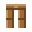 | Snow | Use: Packed snow from the frozen islands | Found, mined or dropped | 1c |
 | Chest | Use: Keeps your things. Click it to open it | 8 Oak planks, 1 Iron bar at workbench; Shipwright 37c | 1c |
 | Mossy stone | Use: Old stone grown over with moss | Dropped by mossy zombie; Dropped by moss troll | 1c |
 | Magma rock | Use: Needs an Iron pickaxe (tier 2) or better to mine. | Dropped by ash wraith | 1c |
 | Crystal block | Use: Needs an Iron pickaxe (tier 2) or better to mine. | Found, mined or dropped | 1c |
 | Cloud | Use: Solid cloud from the sky realm. You can stand on it | 3 Cloud wool at workbench (makes 4) | 1c |
 | Plaster | Use: Smooth pale plaster for walls inside a house | 2 Sand, 1 Stone at furnace (makes 4) | 1c |
 | Timber beam | Use: A heavy wooden beam for framing houses | Found, mined or dropped | 1c |
| Blue roof tiles | Use: Blue slate tiles for a roof | Found, mined or dropped | 1c | |
 | Castle stone | Use: Large dressed stones for castle walls | Found, mined or dropped | 1c |
 | Sky brick | Use: Pale brick from the sky realm | Found, mined or dropped | 1c |
 | Window | Use: A window with a wooden frame | 2 Glass, 2 Sticks at workbench (makes 2) | 1c |
 | Charred wood | Use: Wood blackened by fire | Found, mined or dropped | 1c |
 | Ash | Use: What is left of grass after a fire | Found, mined or dropped | 1c |
 | Red stone | Use: Rock with a red tint | Found, mined or dropped | 1c |
 | Green stone | Use: Rock with a green tint | Found, mined or dropped | 1c |
 | Sapling | Use: A young oak. Plant it on grass or dirt and it grows into a tree | 1 Apple, 1 Dirt by hand; Herbalist 4c for 2 | 1c |
 | Berry bush | Use: A bush that grows berries. Pick them when they ripen | 3 Berries, 1 Dirt by hand; Herbalist 4c | 2c |
| Red flower | Use: A red wildflower | 1 Wheat seeds, 1 Berries by hand; Herbalist 5c for 3 | - | |
 | Yellow flower | Use: A yellow wildflower | 1 Wheat seeds, 1 Honey by hand; Herbalist 5c for 3 | - |
 | Blue flower | Use: A blue wildflower | 1 Wheat seeds, 1 Raw fish by hand; Herbalist 24c for 3 | 2c |
 | Tall grass | Use: A plant. Set it on solid ground. | 1 Wheat seeds, 1 Dirt by hand (makes 2) | 2c |
 | Fern | Use: A leafy fern from the forest floor | 1 Wheat seeds, 1 Dirt by hand; Herbalist 5c for 3 | - |
 | Herb plant | Use: A wild herb used in healing tonics | 2 Herb, 1 Dirt by hand; Herbalist 42c for 2 | 2c |
 | Cactus | Use: A prickly desert plant. It grows on sand | 1 Wheat seeds, 3 Sand by hand; Herbalist 4c | 2c |
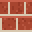 | Sugar cane | Use: Tall cane that grows by water. A sweet crafting material | 2 Wheat seeds, 1 Sand by hand; Herbalist 4c for 2 | 1c |
 | Bush | Use: A plant. Set it on solid ground. | 2 Wheat seeds, 1 Dirt by hand | 2c |
 | Siege workshop | Use: Where war machines are built | 30 Oak planks, 6 Iron bar, 20 Stone at workbench | 1c |
| Wooden bed | Use: A plain wooden bed, 3 blocks wide. Sleep in it, and set up to two stuffed animals on it. Placed, it is a 3-wide bed that holds two stuffed animals | 3 Wool, 6 Oak planks at workbench; 10 Oak planks, 2 Herb at workbench | 1c | |
 | Ice | Use: Clear frozen water from the cold seas | Dropped by frost archer; Dropped by frost brute | 1c |
 | Pumpkin | Use: Place it as a block, bake it into pumpkin pie, or cut it into seeds | Found, mined or dropped | 1c |
 | Campfire | Use: A fire to warm by and cook over | 3 Oak log, 2 Coal, 2 Stone by hand | 1c |
 | Bright torch | Use: A torch that burns brighter and farther than a plain one | 2 Torch, 1 Silver bar at workbench (makes 2) | 1c |
 | Spruce log | Use: Wood from a spruce tree | Chop trees with an axe (or by hand); the logs drop where the tree falls | 2c |
| Spruce planks | Use: Sawn spruce | 1 Spruce log by hand (makes 4) | 1c | |
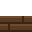 | Birch log | Use: Wood from a white birch tree | Chop trees with an axe (or by hand); the logs drop where the tree falls | 2c |
 | Birch planks | Use: Sawn birch, a pale wood | 1 Birch log by hand (makes 4) | 1c |
 | Palm log | Use: Wood from a palm tree | Chop trees with an axe (or by hand); the logs drop where the tree falls | 2c |
 | Palm planks | Use: Sawn palm wood | 1 Palm log by hand (makes 4) | 1c |
| Jungle log | Use: Wood from a jungle tree | Chop trees with an axe (or by hand); the logs drop where the tree falls | 2c | |
 | Jungle planks | Use: Sawn jungle wood | 1 Jungle log by hand (makes 4) | 1c |
 | Dark oak log | Use: Wood from a dark oak tree | Chop trees with an axe (or by hand); the logs drop where the tree falls | 2c |
| Orc blast furnace | Use: The orcs' great furnace. It smelts the hardest metals | Found, mined or dropped | 2c | |
| Chair | Use: A seat. Sit on it to heal faster | 4 Oak planks, 2 Sticks at workbench | 1c | |
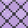 | Table | Use: A wooden table | 6 Oak planks, 2 Sticks at workbench | 1c |
 | Desk | Use: A desk with drawers that hold a few things | 8 Oak planks, 2 Sticks at workbench | 1c |
 | Bench | Use: A long wooden bench to sit on | 5 Oak planks at workbench | 1c |
 | Barrel | Use: A barrel that holds a few things | 8 Oak planks, 1 Iron bar at workbench | 1c |
| Cupboard | Use: A tall cupboard that holds a few things | 10 Oak planks, 2 Sticks at workbench | 1c | |
 | Painting | Use: A framed painting for a wall | 4 Sticks, 2 Wool at workbench | 1c |
 | Stool | Use: A small stool to sit on | 2 Oak planks, 2 Sticks at workbench | 1c |
| Standing lamp | Use: A tall lamp for a room | 1 Iron bar, 1 Torch, 2 Sticks at workbench | 1c | |
 | Wool rug | Use: A wool rug that lies flat on the floor | 3 Wool at workbench (makes 2) | 1c |
 | Item shelf | Use: A shelf that shows off what you put on it | 4 Oak planks, 2 Sticks at workbench | 1c |
 | Spruce door | Use: A spruce door | 6 Spruce planks at workbench | 1c |
 | Birch door | Use: A birch door | 6 Birch planks at workbench | 1c |
 | Palm door | Use: A palm wood door | 6 Palm planks at workbench | 1c |
 | Jungle door | Use: A jungle wood door | 6 Jungle planks at workbench | 1c |
 | Dark oak door | Use: A dark oak door | 6 Dark oak planks at workbench | 1c |
 | Stuffed Archmage | Use: A stuffed Archmage, dropped when the boss falls. Hold it at your side, set it on a bed for 10% more maximum mana, or hang it on a back wall in your home village for its old trophy bonus (+20 maximum mana) | Found, mined or dropped | 40c |
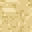 | Stuffed Magma Wizard | Use: A stuffed Magma Wizard, dropped when the boss falls. Hold it at your side, set it on a bed for fire and lava hurt you 10% less, or hang it on a back wall in your home village for its old trophy bonus (fire and lava hurt you 40% less) | Found, mined or dropped | 40c |
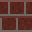 | Stuffed Sky Ranger | Use: A stuffed Sky Ranger, dropped when the boss falls. Hold it at your side, set it on a bed for your arrows, bolts and magic hit 10% harder, or hang it on a back wall in your home village for its old trophy bonus (move 8% faster) | Found, mined or dropped | 40c |
 | Stuffed Magma Knight | Use: A stuffed Magma Knight, dropped when the boss falls. Hold it at your side, set it on a bed for 10% more defense, or hang it on a back wall in your home village for its old trophy bonus (+3 defense) | Found, mined or dropped | 40c |
 | Stuffed Grukk | Use: A stuffed Grukk, dropped when the boss falls. Hold it at your side, set it on a bed for your melee blows hit 10% harder, or hang it on a back wall in your home village for its old trophy bonus (+20 maximum health) | Found, mined or dropped | 40c |
 | Stuffed Ograk & Wimbly | Use: A stuffed Ograk Norlock and his bear Wimbly, together. Split them in the bag, and join them again, dropped when the boss falls. Hold it at your side, set it on a bed for your soldiers hit 10% harder and your tamed animals hit 10% harder, or hang it on a back wall in your home village for its old trophy bonus (your animals hit 15% harder) | Found, mined or dropped | 40c |
 | Stuffed Kraken | Use: A stuffed Kraken, dropped when the boss falls. Hold it at your side, set it on a bed for fish bite 10% sooner, or hang it on a back wall in your home village for its old trophy bonus (hold your breath 50% longer) | Found, mined or dropped | 40c |
| Stuffed Vorthax | Use: A stuffed Vorthax, dropped when the boss falls. Hold it at your side, set it on a bed for you deal 10% more damage, or hang it on a back wall in your home village for its old trophy bonus (you deal 10% more damage) | Found, mined or dropped | 40c | |
 | Arrow slit | Use: A narrow gap in a wall that archers shoot through | Found, mined or dropped | 1c |
 | Throne | Use: A seat for a ruler | Found, mined or dropped | 1c |
 | Weapon rack | Use: A rack to hang weapons on | Found, mined or dropped | 1c |
 | Armor stand | Use: A stand to show off a suit of armor | Found, mined or dropped | 1c |
 | Storm ore | Use: Needs a Diamond pickaxe (tier 4) or better to mine. | Found, mined or dropped | 30c |
| Lightning rod | Use: Lightning in a storm strikes it, leaving storm ore in the ground nearby | 3 Storm bar, 2 Iron bar at workbench | 1c | |
 | Jack-o'-lantern | Use: A carved pumpkin that glows | 1 Pumpkin, 1 Torch by hand | 1c |
 | Scorched stone | Use: Stone blackened by a blast. Builds like stone | Found, mined or dropped | 1c |
 | Spruce sapling | Use: Plant it on grass or dirt and it grows into a spruce tree | Herbalist 9c for 2 | 2c |
 | Birch sapling | Use: Plant it on grass or dirt and it grows into a birch tree | Herbalist 9c for 2 | 2c |
| Palm sapling | Use: Plant it on grass or dirt and it grows into a palm tree | Herbalist 9c for 2 | 2c | |
 | Jungle sapling | Use: Plant it on grass or dirt and it grows into a jungle tree | Herbalist 9c for 2 | 2c |
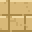 | Dark oak sapling | Use: Plant it on grass or dirt and it grows into a dark oak tree | Herbalist 9c for 2 | 2c |
| Bird cage | Use: Put tamed birds in it (Army: Cage). Up to 4 birds lay eggs in it each morning; use it to collect them | 2 Iron bar, 4 Sticks at workbench | 1c | |
 | Bee hive | Use: Hang it under a block near flowers and bees move in. With flowers within 12 blocks it fills with honey each morning; tap it to take the honey | 8 Oak planks, 1 Honey at workbench | 6c |
 | Firefly jar | Use: Glowing insects in a glass jar: a soft lantern that never burns out. Hang it on a wall or set it on a floor | 1 Glass, 1 Firefly at workbench; 1 Glass, 1 Glow fly at workbench; 1 Glass, 1 Ember moth at workbench; 1 Glass, 1 Lantern fly at workbench | 8c |
 | Sign | Use: A wooden sign for the ground. Click it to write on it; anyone walking past can read it | 4 Oak planks at workbench | 2c |
| Pile of bones | Use: Old bones. Something big ate well here | Found, mined or dropped | 1c | |
 | Bone block | Use: Packed old bone, found under the snow | 4 Bone at workbench | 2c |
 | Thatch | Use: Bundled straw for roofs. It catches fire easily | 3 Wheat at workbench (makes 4) | 1c |
 | Iron plate | Use: Riveted iron for walls. Fire cannot burn it. Needs an Iron pickaxe (tier 2) or better to mine. | 1 Iron bar, 2 Castle stone at workbench (makes 4) | 2c |
 | Iron beam | Use: A dark iron beam for frames and trim. Needs an Iron pickaxe (tier 2) or better to mine. | 1 Iron bar at workbench (makes 4) | 2c |
| Iron roof | Use: Iron roofing that shrugs off fire and storms. Needs an Iron pickaxe (tier 2) or better to mine. | 1 Iron bar, 1 Castle stone at workbench (makes 4) | 2c | |
 | Deep stone brick | Use: Dark, heavy bricks cut from the deep stone; a Town castle is built of them | 4 Castle stone, 1 Coal at furnace (makes 4) | 2c |
 | Deep stone trim | Use: Dark dressed stone for corners and beams | 4 Deep stone brick at workbench (makes 4) | 2c |
| Spruce table | Use: Table Made of spruce wood. | 6 Spruce planks, 2 Sticks at workbench | 1c | |
 | Birch table | Use: Table Made of birch wood. | 6 Birch planks, 2 Sticks at workbench | 1c |
 | Palm table | Use: Table Made of palm wood. | 6 Palm planks, 2 Sticks at workbench | 1c |
| Jungle table | Use: Table Made of jungle wood. | 6 Jungle planks, 2 Sticks at workbench | 1c | |
 | Dark oak table | Use: Table Made of dark oak wood. | 6 Dark oak planks, 2 Sticks at workbench | 1c |
 | Spruce chair | Use: Chair Made of spruce wood. | 4 Spruce planks, 2 Sticks at workbench | 1c |
 | Birch chair | Use: Chair Made of birch wood. | 4 Birch planks, 2 Sticks at workbench | 1c |
| Palm chair | Use: Chair Made of palm wood. | 4 Palm planks, 2 Sticks at workbench | 1c | |
| Jungle chair | Use: Chair Made of jungle wood. | 4 Jungle planks, 2 Sticks at workbench | 1c | |
 | Dark oak chair | Use: Chair Made of dark oak wood. | 4 Dark oak planks, 2 Sticks at workbench | 1c |
 | Spruce bench | Use: Bench Made of spruce wood. | 5 Spruce planks at workbench | 1c |
 | Birch bench | Use: Bench Made of birch wood. | 5 Birch planks at workbench | 1c |
 | Palm bench | Use: Bench Made of palm wood. | 5 Palm planks at workbench | 1c |
 | Jungle bench | Use: Bench Made of jungle wood. | 5 Jungle planks at workbench | 1c |
 | Dark oak bench | Use: Bench Made of dark oak wood. | 5 Dark oak planks at workbench | 1c |
 | Spruce stool | Use: Stool Made of spruce wood. | 2 Spruce planks, 2 Sticks at workbench | 1c |
 | Birch stool | Use: Stool Made of birch wood. | 2 Birch planks, 2 Sticks at workbench | 1c |
 | Palm stool | Use: Stool Made of palm wood. | 2 Palm planks, 2 Sticks at workbench | 1c |
 | Jungle stool | Use: Stool Made of jungle wood. | 2 Jungle planks, 2 Sticks at workbench | 1c |
 | Dark oak stool | Use: Stool Made of dark oak wood. | 2 Dark oak planks, 2 Sticks at workbench | 1c |
 | Spruce bed | Use: Bed Made of spruce wood.. Placed, it is a 3-wide bed that holds two stuffed animals | 3 Wool, 6 Spruce planks at workbench; 10 Spruce planks, 2 Herb at workbench | 1c |
 | Birch bed | Use: Bed Made of birch wood.. Placed, it is a 3-wide bed that holds two stuffed animals | 3 Wool, 6 Birch planks at workbench; 10 Birch planks, 2 Herb at workbench | 1c |
 | Palm bed | Use: Bed Made of palm wood.. Placed, it is a 3-wide bed that holds two stuffed animals | 3 Wool, 6 Palm planks at workbench; 10 Palm planks, 2 Herb at workbench | 1c |
| Jungle bed | Use: Bed Made of jungle wood.. Placed, it is a 3-wide bed that holds two stuffed animals | 3 Wool, 6 Jungle planks at workbench; 10 Jungle planks, 2 Herb at workbench | 1c | |
| Dark oak bed | Use: Bed Made of dark oak wood.. Placed, it is a 3-wide bed that holds two stuffed animals | 3 Wool, 6 Dark oak planks at workbench; 10 Dark oak planks, 2 Herb at workbench | 1c | |
 | Spruce bookshelf | Use: Bookshelf Made of spruce wood. | 6 Spruce planks at workbench | 1c |
 | Birch bookshelf | Use: Bookshelf Made of birch wood. | 6 Birch planks at workbench | 1c |
 | Palm bookshelf | Use: Bookshelf Made of palm wood. | 6 Palm planks at workbench | 1c |
 | Jungle bookshelf | Use: Bookshelf Made of jungle wood. | 6 Jungle planks at workbench | 1c |
 | Dark oak bookshelf | Use: Bookshelf Made of dark oak wood. | 6 Dark oak planks at workbench | 1c |
| Spruce cupboard | Use: Cupboard Made of spruce wood. | 10 Spruce planks, 2 Sticks at workbench | 1c | |
 | Birch cupboard | Use: Cupboard Made of birch wood. | 10 Birch planks, 2 Sticks at workbench | 1c |
 | Palm cupboard | Use: Cupboard Made of palm wood. | 10 Palm planks, 2 Sticks at workbench | 1c |
 | Jungle cupboard | Use: Cupboard Made of jungle wood. | 10 Jungle planks, 2 Sticks at workbench | 1c |
 | Dark oak cupboard | Use: Cupboard Made of dark oak wood. | 10 Dark oak planks, 2 Sticks at workbench | 1c |
 | Spruce desk | Use: Desk Made of spruce wood. | 8 Spruce planks, 2 Sticks at workbench | 1c |
 | Birch desk | Use: Desk Made of birch wood. | 8 Birch planks, 2 Sticks at workbench | 1c |
 | Palm desk | Use: Desk Made of palm wood. | 8 Palm planks, 2 Sticks at workbench | 1c |
 | Jungle desk | Use: Desk Made of jungle wood. | 8 Jungle planks, 2 Sticks at workbench | 1c |
| Dark oak desk | Use: Desk Made of dark oak wood. | 8 Dark oak planks, 2 Sticks at workbench | 1c | |
 | Spruce barrel | Use: Barrel Made of spruce wood. | 8 Spruce planks, 1 Iron bar at workbench | 1c |
 | Birch barrel | Use: Barrel Made of birch wood. | 8 Birch planks, 1 Iron bar at workbench | 1c |
 | Palm barrel | Use: Barrel Made of palm wood. | 8 Palm planks, 1 Iron bar at workbench | 1c |
 | Jungle barrel | Use: Barrel Made of jungle wood. | 8 Jungle planks, 1 Iron bar at workbench | 1c |
 | Dark oak barrel | Use: Barrel Made of dark oak wood. | 8 Dark oak planks, 1 Iron bar at workbench | 1c |
| Spruce workbench | Use: Workbench Made of spruce wood. | 10 Spruce planks by hand | 1c | |
 | Birch workbench | Use: Workbench Made of birch wood. | 10 Birch planks by hand | 1c |
| Palm workbench | Use: Workbench Made of palm wood. | 10 Palm planks by hand | 1c | |
 | Jungle workbench | Use: Workbench Made of jungle wood. | 10 Jungle planks by hand | 1c |
 | Dark oak workbench | Use: Workbench Made of dark oak wood. | 10 Dark oak planks by hand | 1c |
 | Pine sapling | Use: Plant it on snow, grass or dirt and it grows into a tall snowy pine | 1 Spruce sapling, 2 Snow by hand; Herbalist 10c | 1c |
 | Blue mushroom spore | Use: Plant it on stone, moss, dirt or grass and it grows into a giant blue mushroom | Herbalist 14c | 1c |
| Green mushroom spore | Use: Plant it on stone, moss, dirt or grass and it grows into a giant green mushroom | Herbalist 14c | 1c | |
| Red mushroom spore | Use: Plant it on stone, moss, dirt or grass and it grows into a giant red mushroom | Herbalist 14c | 1c | |
 | Orange mushroom spore | Use: Plant it on stone, moss, dirt or grass and it grows into a giant orange mushroom | Herbalist 14c | 1c |
| Red clay tiles | Use: Rounded red roof tiles, like the roofs of the grandest shop houses | 2 Red brick at furnace (makes 4) | 1c | |
 | Clay eave | Use: A dark trim course for the edge of a tile roof | 1 Red brick, 1 Castle stone at furnace (makes 4) | 1c |
| Stone door | Use: A heavy door of stone slabs. It cannot burn | 6 Stone brick at workbench | 1c | |
 | Iron door | Use: A riveted iron door. It cannot burn. Needs an Iron pickaxe (tier 2) or better to mine. | 3 Iron bar, 2 Castle stone at workbench | 2c |
 | Anvil | Use: The blacksmith works here. A home with an anvil can house a blacksmith | 5 Iron bar at workbench | 1c |
 | Cooking pot | Use: The cook works here. A home with a cooking pot can house a cook | 2 Iron bar, 1 Oak log at workbench | 1c |
 | Herb rack | Use: The herbalist works here. A home with a herb rack can house a herbalist | 4 Oak planks, 3 Herb at workbench | 1c |
| Ship's wheel | Use: The shipwright works here. A home with a ship's wheel can house a shipwright | 6 Oak planks, 1 Iron bar at workbench | 1c | |
 | Gem bench | Use: The jeweler works here. A home with a gem bench can house a jeweler | 4 Oak planks, 2 Glass at workbench | 1c |
 | Drafting table | Use: The war engineer works here. A home with a drafting table can house a war engineer | 5 Oak planks, 1 Iron bar at workbench | 1c |
 | Powder keg | Use: The demolitionist works here. A home with a powder keg can house a demolitionist | 1 Barrel, 2 Black powder at workbench | 1c |
 | Notice board | Use: The recruiter works here. A home with a notice board can house a recruiter | 4 Oak planks, 2 Sticks at workbench | 1c |
 | Feed trough | Use: The beast trainer works here. A home with a feed trough can house a beast trainer | 4 Oak planks, 4 Wheat at workbench | 1c |
 | Composter | Use: Farmers work here. A farmhouse or home with a composter can house farmers | 4 Oak planks, 4 Dirt at workbench | 1c |
 | Chopping block | Use: Woodcutters work here. A lodge or home with a chopping block can house woodcutters | 2 Oak log, 1 Sticks at workbench | 1c |
 | Ore cart | Use: Miners work here. A mine or home with an ore cart can house miners | 4 Iron bar, 2 Coal at workbench | 1c |
 | Guard post | Use: A soldier's post. Place it in a home that has a bed, a chest and a job item, then station a soldier at it from the Buildings window | 2 Oak planks, 1 Iron bar, 2 Sticks at workbench | 1c |
 | Stone table | Use: Table. Made of stone; it cannot burn. | 6 Castle stone, 2 Sticks at workbench | 1c |
 | Deep stone table | Use: Table. Made of deep stone; it cannot burn. | 6 Deep stone brick, 2 Sticks at workbench | 1c |
 | Iron table | Use: Table. Made of iron; it cannot burn. | 2 Iron bar, 2 Sticks at workbench | 1c |
| Stone chair | Use: Chair. Made of stone; it cannot burn. | 4 Castle stone, 2 Sticks at workbench | 1c | |
 | Deep stone chair | Use: Chair. Made of deep stone; it cannot burn. | 4 Deep stone brick, 2 Sticks at workbench | 1c |
 | Iron chair | Use: Chair. Made of iron; it cannot burn. | 2 Iron bar, 2 Sticks at workbench | 1c |
 | Stone bench | Use: Bench. Made of stone; it cannot burn. | 5 Castle stone at workbench | 1c |
 | Deep stone bench | Use: Bench. Made of deep stone; it cannot burn. | 5 Deep stone brick at workbench | 1c |
 | Iron bench | Use: Bench. Made of iron; it cannot burn. | 2 Iron bar at workbench | 1c |
 | Stone stool | Use: Stool. Made of stone; it cannot burn. | 2 Castle stone, 2 Sticks at workbench | 1c |
 | Deep stone stool | Use: Stool. Made of deep stone; it cannot burn. | 2 Deep stone brick, 2 Sticks at workbench | 1c |
 | Iron stool | Use: Stool. Made of iron; it cannot burn. | 1 Iron bar, 2 Sticks at workbench | 1c |
 | Stone bed | Use: Bed. Made of stone; it cannot burn. | 3 Wool, 6 Castle stone at workbench; 10 Castle stone, 2 Herb at workbench | 1c |
 | Deep stone bed | Use: Bed. Made of deep stone; it cannot burn. | 3 Wool, 6 Deep stone brick at workbench; 10 Deep stone brick, 2 Herb at workbench | 1c |
 | Iron bed | Use: Bed. Made of iron; it cannot burn. | 3 Wool, 2 Iron bar at workbench; 4 Iron bar, 2 Herb at workbench | 1c |
 | Stone bookshelf | Use: Bookshelf. Made of stone; it cannot burn. | 6 Castle stone at workbench | 1c |
| Deep stone bookshelf | Use: Bookshelf. Made of deep stone; it cannot burn. | 6 Deep stone brick at workbench | 1c | |
 | Iron bookshelf | Use: Bookshelf. Made of iron; it cannot burn. | 2 Iron bar at workbench | 1c |
 | Stone cupboard | Use: Cupboard. Made of stone; it cannot burn. | 10 Castle stone, 2 Sticks at workbench | 1c |
 | Deep stone cupboard | Use: Cupboard. Made of deep stone; it cannot burn. | 10 Deep stone brick, 2 Sticks at workbench | 1c |
 | Iron cupboard | Use: Cupboard. Made of iron; it cannot burn. | 4 Iron bar, 2 Sticks at workbench | 1c |
 | Stone desk | Use: Desk. Made of stone; it cannot burn. | 8 Castle stone, 2 Sticks at workbench | 1c |
 | Deep stone desk | Use: Desk. Made of deep stone; it cannot burn. | 8 Deep stone brick, 2 Sticks at workbench | 1c |
 | Iron desk | Use: Desk. Made of iron; it cannot burn. | 3 Iron bar, 2 Sticks at workbench | 1c |
 | Stone barrel | Use: Barrel. Made of stone; it cannot burn. | 8 Castle stone, 1 Iron bar at workbench | 1c |
| Deep stone barrel | Use: Barrel. Made of deep stone; it cannot burn. | 8 Deep stone brick, 1 Iron bar at workbench | 1c | |
 | Iron barrel | Use: Barrel. Made of iron; it cannot burn. | 3 Iron bar, 1 Iron bar at workbench | 1c |
 | Green roof tiles | Use: Roof tiles in the green faction's colour | 2 Stone, 1 Fern at furnace (makes 4) | 1c |
 | Red iron roof | Use: Iron roofing painted in the red faction's colour. Needs an Iron pickaxe (tier 2) or better to mine. | 4 Iron roof at workbench (makes 4) | 2c |
 | Green iron roof | Use: Iron roofing painted in the green faction's colour. Needs an Iron pickaxe (tier 2) or better to mine. | 4 Iron roof at workbench (makes 4) | 2c |
 | Blue iron roof | Use: Iron roofing painted in the blue faction's colour. Needs an Iron pickaxe (tier 2) or better to mine. | 4 Iron roof at workbench (makes 4) | 2c |
 | Green clay tiles | Use: Rounded roof tiles in the green faction's colour | 4 Red clay tiles at workbench (makes 4) | 1c |
 | Blue clay tiles | Use: Rounded roof tiles in the blue faction's colour | 4 Red clay tiles at workbench (makes 4) | 1c |
| Dirt path | Use: Packed, trampled earth where villagers walk | 4 Dirt by hand (makes 4) | 1c | |
 | Cobblestone path | Use: Rounded stones set into the ground for a town's streets | 4 Stone at workbench (makes 4) | 1c |
 | Iron walkway | Use: A riveted iron grate laid over the ground for a city's streets. Needs an Iron pickaxe (tier 2) or better to mine. | 1 Iron bar, 2 Stone at workbench (makes 4) | 2c |
 | Jade stone | Use: Pale green stone from the jade caves | Found, mined or dropped | 2c |
 | Rose stone | Use: Pale red stone from the rose caves | Found, mined or dropped | 2c |
 | Azure stone | Use: Pale blue stone from the azure caves | Found, mined or dropped | 2c |
 | Dripstone | Use: Banded rock built up drop by drop in the stalagmite caves | Dropped by dripstone golem | 2c |
 | Fossil stone | Use: Sandstone holding the bones of long-gone creatures | Found, mined or dropped | 2c |
| Jade shard | Use: A glowing green crystal from the jade caves | Dropped by jade crab; Dropped by jade mantis | 6c | |
 | Rose quartz | Use: A glowing pink crystal from the rose caves | Dropped by rose wisp; Dropped by rose serpent | 6c |
 | Azure shard | Use: A glowing blue crystal from the azure caves | Dropped by azure spider | 6c |
 | Stalagmite | Use: A rock spike growing up from a cave floor | Dropped by dripstone golem | 1c |
 | Stalactite | Use: A rock spike hanging from a cave ceiling | Found, mined or dropped | 1c |
 | Glow bulb | Use: A glowing bulb that hangs from roots in the root caverns. A soft light for your home | Dropped by root wyrm | 6c |
 | Jade brick | Use: Cut and polished jade stone for building | 4 Jade stone at workbench (makes 4) | 2c |
 | Rose brick | Use: Cut and polished rose stone for building | 4 Rose stone at workbench (makes 4) | 2c |
 | Azure brick | Use: Cut and polished azure stone for building | 4 Azure stone at workbench (makes 4) | 2c |
 | Light red roof tiles | Use: Light roof tiles in the red faction's colour, for stone buildings | 4 Roof tiles at workbench (makes 4) | 1c |
 | Light green roof tiles | Use: Light roof tiles in the green faction's colour, for stone buildings | 4 Roof tiles at workbench (makes 4) | 1c |
| Light blue roof tiles | Use: Light roof tiles in the blue faction's colour, for stone buildings | 4 Roof tiles at workbench (makes 4) | 1c | |
 | Coral block | Use: Pink coral pressed into a building block | 2 Coral by hand (makes 4) | 2c |
 | Blue rug | Use: A rug that lies flat on the floor | 3 Wool, 1 Blue flower at workbench (makes 2) | 2c |
 | Green rug | Use: A rug that lies flat on the floor | 3 Wool, 1 Herb at workbench (makes 2) | 2c |
| Golden rug | Use: A rug that lies flat on the floor | 3 Wool, 1 Gold bar at workbench (makes 2) | 2c | |
 | Striped rug | Use: A rug that lies flat on the floor | 3 Wool, 1 Red flower, 1 Yellow flower at workbench (makes 2) | 2c |
 | Bamboo mat | Use: A rug that lies flat on the floor | 4 Sugar cane at workbench (makes 2) | 2c |
 | Breakdown bench | Use: Stand next to it to break items in your bag back into the materials they were made from. Unlocked by beating both wizards | 6 Iron bar, 10 Stone, 1 Diamond at workbench | 40c |
 | Dark slate arrow slit | Use: A narrow window your archers and mages can shoot through | 1 Arrow slit, 1 Deepstone at workbench | 1c |
 | Iron arrow slit | Use: A narrow window your archers and mages can shoot through | 1 Arrow slit, 1 Iron bar at workbench | 1c |
 | Oak trap door | Use: A door that lies in the floor. Closed, you stand on it and nothing comes up through it. Tap it, jump up under it or hold down on it to open it. Enemies cannot open it. | 3 Oak planks at workbench | 2c |
 | Spruce trap door | Use: A door that lies in the floor. Closed, you stand on it and nothing comes up through it. Tap it, jump up under it or hold down on it to open it. Enemies cannot open it. | 3 Spruce planks at workbench | 2c |
 | Birch trap door | Use: A door that lies in the floor. Closed, you stand on it and nothing comes up through it. Tap it, jump up under it or hold down on it to open it. Enemies cannot open it. | 3 Birch planks at workbench | 2c |
 | Palm trap door | Use: A door that lies in the floor. Closed, you stand on it and nothing comes up through it. Tap it, jump up under it or hold down on it to open it. Enemies cannot open it. | 3 Palm planks at workbench | 2c |
 | Jungle trap door | Use: A door that lies in the floor. Closed, you stand on it and nothing comes up through it. Tap it, jump up under it or hold down on it to open it. Enemies cannot open it. | 3 Jungle planks at workbench | 2c |
 | Dark oak trap door | Use: A door that lies in the floor. Closed, you stand on it and nothing comes up through it. Tap it, jump up under it or hold down on it to open it. Enemies cannot open it. | 3 Dark oak planks at workbench | 2c |
 | Stone trap door | Use: A door that lies in the floor. Closed, you stand on it and nothing comes up through it. Tap it, jump up under it or hold down on it to open it. Enemies cannot open it. | 3 Castle stone at workbench | 2c |
 | Deep stone trap door | Use: A door that lies in the floor. Closed, you stand on it and nothing comes up through it. Tap it, jump up under it or hold down on it to open it. Enemies cannot open it. | 3 Deep stone brick at workbench | 2c |
| Iron trap door | Use: A door that lies in the floor. Closed, you stand on it and nothing comes up through it. Tap it, jump up under it or hold down on it to open it. Enemies cannot open it. Needs an Iron pickaxe (tier 2) or better to mine. | 2 Iron bar at workbench | 4c | |
 | Shale | Use: Layered purple-grey rock, the middle of the three rock layers: below the stone near the surface and above the deepstone. Any pickaxe mines it. | Dropped by shale crawler | 1c |
 | Jade glowcap | Use: A glowing mushroom from the jade caves. Place it on the ground for a soft light. | Found, mined or dropped | 4c |
 | Jade fern | Use: A glowing plant from the jade caves. Place it on the ground for a soft light. | Found, mined or dropped | 4c |
 | Rose glowcap | Use: A glowing mushroom from the rose caves. Place it on the ground for a soft light. | Found, mined or dropped | 4c |
| Rose lily | Use: A glowing plant from the rose caves. Place it on the ground for a soft light. | Found, mined or dropped | 4c | |
| Azure glowcap | Use: A glowing mushroom from the azure caves. Place it on the ground for a soft light. | Found, mined or dropped | 4c | |
 | Frost bell | Use: A glowing plant from the azure caves. Place it on the ground for a soft light. | Found, mined or dropped | 4c |
 | Amber glowcap | Use: A glowing mushroom from the stalagmite caves. Place it on the ground for a soft light. | Found, mined or dropped | 4c |
 | Amber reed | Use: A glowing plant from the stalagmite caves. Place it on the ground for a soft light. | Found, mined or dropped | 4c |
 | Ember glowcap | Use: A glowing mushroom from the root caverns. Place it on the ground for a soft light. | Found, mined or dropped | 4c |
 | Lantern flower | Use: A glowing plant from the root caverns. Place it on the ground for a soft light. | Dropped by root wyrm | 4c |
 | Bone glowcap | Use: A glowing mushroom from the fossil beds. Place it on the ground for a soft light. | Found, mined or dropped | 4c |
 | Ghost orchid | Use: A glowing plant from the fossil beds. Place it on the ground for a soft light. | Found, mined or dropped | 4c |
 | Verdant glowcap | Use: A glowing mushroom from the overgrown caverns. Place it on the ground for a soft light. | Found, mined or dropped | 4c |
 | Moon bloom | Use: A glowing plant from the overgrown caverns. Place it on the ground for a soft light. | Dropped by glow moth | 4c |
| Overgrown loam | Use: Dark, root-filled earth from the overgrown caverns | Found, mined or dropped | 1c | |
 | Glowmoss turf | Use: Glowing moss on dark earth; it lines the floors of the overgrown caverns | Found, mined or dropped | 2c |
 | Giant stalk | Use: The stem of a giant fern from the overgrown caverns | Found, mined or dropped | 2c |
 | Giant leaf | Use: A leaf wide enough to stand on, from the giant ferns of the overgrown caverns | Found, mined or dropped | 2c |
 | Giant bloom | Use: A huge glowing flower head from the overgrown caverns | Found, mined or dropped | 6c |
 | Glowcap cap | Use: The cap of a giant glowcap; you can stand on it | Found, mined or dropped | 3c |
 | Glow vine | Use: A hanging vine from the overgrown caverns, dotted with glowing buds | Found, mined or dropped | 1c |
| Sandstone | Use: Natural sandstone from under the desert. Unlike sand it holds its place. Two make two sandstone bricks at a workbench. | Found, mined or dropped | 1c | |
 | Magma dirt | Use: Dark, ashy soil of the magma realm. The magma plants grow on it | Found, mined or dropped | 1c |
 | Basalt | Use: Dark grey columns of cooled lava. Needs an Iron pickaxe (tier 2) or better to mine. | Found, mined or dropped | 2c |
 | Ember stone | Use: Black rock veined with glowing cracks. It gives a little light. Needs an Iron pickaxe (tier 2) or better to mine. | Found, mined or dropped | 2c |
 | Scoria | Use: Porous red-black rock, light and crumbly | Found, mined or dropped | 1c |
 | Spruce chest | Use: A chest made of spruce wood. It holds as much as any chest. | 8 Spruce planks, 1 Iron bar at workbench | 1c |
 | Birch chest | Use: A chest made of birch wood. It holds as much as any chest. | 8 Birch planks, 1 Iron bar at workbench | 1c |
 | Palm chest | Use: A chest made of palm wood. It holds as much as any chest. | 8 Palm planks, 1 Iron bar at workbench | 1c |
 | Jungle chest | Use: A chest made of jungle wood. It holds as much as any chest. | 8 Jungle planks, 1 Iron bar at workbench | 1c |
 | Dark oak chest | Use: A chest made of dark oak wood. It holds as much as any chest. | 8 Dark oak planks, 1 Iron bar at workbench | 1c |
 | Stone birdbath | Use: A small stone birdbath that bubbles up from its top. Birds love it. 1 wide and 2 tall. Set it in water or beside it and water runs from the spout into the basin. Or pour a water bucket into it and it runs on its own. Meadow fountain, small: while it runs in your village it gives you and your soldiers +2% faster health refill (each kind counts once, the biggest one; at most +15% of one bonus from fountains) | 6 Stone brick at workbench; Herbalist 60c | 6c |
 | Lion head fountain | Use: Water pours from a golden lion's mouth into a stone trough. A forest garden favourite. 2 wide and 2 tall. Set it in water or beside it and water runs from the spout into the basin. Or pour a water bucket into it and it runs on its own. Forest fountain, medium: while it runs in your village it gives you and your soldiers +5% damage (each kind counts once, the biggest one; at most +15% of one bonus from fountains) | 10 Stone brick, 2 Iron bar, 1 Gold bar at workbench | 30c |
 | Oasis fountain | Use: A sandstone urn on a pillar that pours from both sides, the way desert wells were kept. 2 wide and 2 tall. Set it in water or beside it and water runs from the spout into the basin. Or pour a water bucket into it and it runs on its own. Desert fountain, medium: while it runs in your village it gives you and your soldiers +5% faster health refill (each kind counts once, the biggest one; at most +15% of one bonus from fountains) | 12 Sandstone brick, 2 Cactus, 1 Gold bar at workbench | 30c |
 | Skywood log | Use: A pale log from a skywood tree. It splits into skywood planks | Chop trees with an axe (or by hand); the logs drop where the tree falls | 2c |
 | Skywood planks | Use: Light, pale planks from the sky realm | 1 Skywood log by hand (makes 4); Shipwright 60c for 20 | 1c |
 | Emberwood log | Use: A black log from an ember tree, still warm inside. It splits into emberwood planks and never burns | Chop trees with an axe (or by hand); the logs drop where the tree falls | 2c |
| Emberwood planks | Use: Dark red planks from the magma realm. They never burn | 1 Emberwood log by hand (makes 4); Shipwright 90c for 20 | 1c | |
 | Skywood door | Use: A pale skywood door | 6 Skywood planks at workbench | 1c |
 | Emberwood door | Use: An emberwood door. It never burns | 6 Emberwood planks at workbench | 1c |
 | Skywood trap door | Use: A door that lies in the floor. Closed, you stand on it and nothing comes up through it. Tap it, jump up under it or hold down on it to open it. Enemies cannot open it. | 3 Skywood planks at workbench | 2c |
 | Emberwood trap door | Use: A door that lies in the floor. Closed, you stand on it and nothing comes up through it. Tap it, jump up under it or hold down on it to open it. Enemies cannot open it. | 3 Emberwood planks at workbench | 2c |
 | Skywood table | Use: Table Made of skywood. | 6 Skywood planks, 2 Sticks at workbench | 1c |
 | Emberwood table | Use: Table Made of emberwood. | 6 Emberwood planks, 2 Sticks at workbench | 1c |
 | Skywood chair | Use: Chair Made of skywood. | 4 Skywood planks, 2 Sticks at workbench | 1c |
 | Emberwood chair | Use: Chair Made of emberwood. | 4 Emberwood planks, 2 Sticks at workbench | 1c |
 | Skywood bench | Use: Bench Made of skywood. | 5 Skywood planks at workbench | 1c |
 | Emberwood bench | Use: Bench Made of emberwood. | 5 Emberwood planks at workbench | 1c |
| Skywood stool | Use: Stool Made of skywood. | 2 Skywood planks, 2 Sticks at workbench | 1c | |
 | Emberwood stool | Use: Stool Made of emberwood. | 2 Emberwood planks, 2 Sticks at workbench | 1c |
 | Skywood bed | Use: Bed Made of skywood.. Placed, it is a 3-wide bed that holds two stuffed animals | 3 Wool, 6 Skywood planks at workbench; 10 Skywood planks, 2 Herb at workbench | 1c |
 | Emberwood bed | Use: Bed Made of emberwood.. Placed, it is a 3-wide bed that holds two stuffed animals | 3 Wool, 6 Emberwood planks at workbench; 10 Emberwood planks, 2 Herb at workbench | 1c |
 | Skywood bookshelf | Use: Bookshelf Made of skywood. | 6 Skywood planks at workbench | 1c |
 | Emberwood bookshelf | Use: Bookshelf Made of emberwood. | 6 Emberwood planks at workbench | 1c |
 | Skywood cupboard | Use: Cupboard Made of skywood. | 10 Skywood planks, 2 Sticks at workbench | 1c |
| Emberwood cupboard | Use: Cupboard Made of emberwood. | 10 Emberwood planks, 2 Sticks at workbench | 1c | |
 | Skywood desk | Use: Desk Made of skywood. | 8 Skywood planks, 2 Sticks at workbench | 1c |
 | Emberwood desk | Use: Desk Made of emberwood. | 8 Emberwood planks, 2 Sticks at workbench | 1c |
 | Skywood barrel | Use: Barrel Made of skywood. | 8 Skywood planks, 1 Iron bar at workbench | 1c |
 | Emberwood barrel | Use: Barrel Made of emberwood. | 8 Emberwood planks, 1 Iron bar at workbench | 1c |
 | Skywood workbench | Use: Workbench Made of skywood. | 10 Skywood planks by hand | 1c |
 | Emberwood workbench | Use: Workbench Made of emberwood. | 10 Emberwood planks by hand | 1c |
 | Skywood sapling | Use: Plant it on a cloud and it grows into a skywood tree. It only grows on clouds | 1 Sapling, 1 Swift plume, 2 Cloud by hand | 2c |
 | Emberwood sapling | Use: Plant it on magma dirt, scoria, basalt or magma rock and it grows into an ember tree. It never burns | 1 Sapling, 2 Magma dirt, 1 Charcoal by hand | 2c |
 | Cloud lamp | Use: A glowing lamp of cloud wool and storm essence in a skywood frame | 2 Skywood planks, 1 Storm essence, 1 Cloud wool at workbench (makes 2) | 6c |
 | Ember lamp | Use: A warm glowing lamp of emberwood. It never burns | 2 Emberwood planks, 1 Charcoal at workbench (makes 2) | 6c |
 | Pharaoh's fountain | Use: An old king of the sands in gold and lapis, water running from his lips. 2 wide and 3 tall. Set it in water or beside it and water runs from the spout into the basin. Only found in the desert; mine it to take it home. Or pour a water bucket into it and it runs on its own. Desert fountain, medium: while it runs in your village it gives you +5% faster mana refill (each kind counts once, the biggest one; at most +15% of one bonus from fountains) | Found, mined or dropped | 120c |
 | Frost fountain | Use: Carved ice bound with silver. Its water never freezes. 2 wide and 2 tall. Set it in water or beside it and water runs from the spout into the basin. Or pour a water bucket into it and it runs on its own. Snow fountain, medium: while it runs in your village it gives you and your soldiers +5% less damage taken (each kind counts once, the biggest one; at most +15% of one bonus from fountains) | 10 Ice, 2 Silver bar, 4 Snow at workbench | 40c |
 | Grove bloom fountain | Use: A giant glowing flower over a mossy basin, water dripping from its petal tips. 2 wide and 2 tall. Set it in water or beside it and water runs from the spout into the basin. Only found in the overgrown grove caverns; mine it to take it home. Or pour a water bucket into it and it runs on its own. Cave fountain, medium: while it runs in your village it gives you and your soldiers +5% faster health refill (each kind counts once, the biggest one; at most +15% of one bonus from fountains) | Found, mined or dropped | 110c |
| Crystal fountain | Use: A spire of living crystal from the gem caves. Water runs off its tip in glittering arcs. 2 wide and 3 tall. Set it in water or beside it and water runs from the spout into the basin. Or pour a water bucket into it and it runs on its own. Cave fountain, medium: while it runs in your village it gives you +5% faster mana refill (each kind counts once, the biggest one; at most +15% of one bonus from fountains) | 8 Crystal block, 3 Amethyst, 1 Sapphire at workbench | 80c | |
 | Marble maiden fountain | Use: A marble maiden pours water from the jar on her shoulder into the basin below. 2 wide and 3 tall. Set it in water or beside it and water runs from the spout into the basin. Or pour a water bucket into it and it runs on its own. Village fountain, medium: while it runs in your village it gives you and your soldiers +5% less damage taken (each kind counts once, the biggest one; at most +15% of one bonus from fountains) | 16 Marble, 2 Gold bar at workbench; Shipwright 260c | 60c |
 | Tiered marble fountain | Use: Three marble bowls, one above the other, the water spilling from each into the next. The pride of a town square. 3 wide and 3 tall. Set it in water or beside it and water runs from the spout into the basin. Or pour a water bucket into it and it runs on its own. Village fountain, large: while it runs in your village it gives you and your soldiers +7% speed (each kind counts once, the biggest one; at most +15% of one bonus from fountains) | 24 Marble, 4 Gold bar, 2 Sapphire at workbench; Jeweler 520c | 120c |
 | Mythril fountain | Use: Three bowls of shining mythril with gold rims and a jet that leaps from the top. 3 wide and 3 tall. Set it in water or beside it and water runs from the spout into the basin. Or pour a water bucket into it and it runs on its own. Deep cave fountain, large: while it runs in your village it gives you and your soldiers +7% damage (each kind counts once, the biggest one; at most +15% of one bonus from fountains) | 8 Mythril bar, 12 Marble, 2 Diamond at workbench | 260c |
 | Cloud fountain | Use: A winged figure on a bank of cloud pours water from a golden jar. 2 wide and 3 tall. Set it in water or beside it and water runs from the spout into the basin. Only found on the islands of the sky realm; mine it to take it home. Or pour a water bucket into it and it runs on its own. Sky realm fountain, medium: while it runs in your village it gives you and your soldiers +5% speed (each kind counts once, the biggest one; at most +15% of one bonus from fountains) | Found, mined or dropped | 140c |
 | Magma fountain | Use: A horned demon's head of obsidian that spits molten rock. Also found in the magma realm. 2 wide and 2 tall. Only lava makes it run: set it in or beside lava and it pours lava into its basin (water does nothing). Or pour a Lava bucket into it and it runs on its own. Magma realm fountain, medium: while it runs in your village it gives you and your soldiers +5% damage (each kind counts once, the biggest one; at most +15% of one bonus from fountains) | 10 Obsidian, 8 Magma rock, 1 Adamantite bar at workbench | 90c |
 | Obsidian fountain | Use: A rune-cut obelisk of volcanic glass, deep in the caves. Fire and water alike run through it. 2 wide and 2 tall. Runs with water or with lava, whichever touches it. Or pour a water or lava bucket into it and it runs on its own. Deep cave fountain, medium: while it runs in your village it gives you and your soldiers +5% less damage taken (each kind counts once, the biggest one; at most +15% of one bonus from fountains) | 12 Obsidian, 2 Gold bar, 2 Amethyst at workbench | 60c |
 | Sunken shell fountain | Use: A coral fish over a giant clam shell, lost on the sea floor long ago. 2 wide and 2 tall. Set it in water or beside it and water runs from the spout into the basin. Only found on the sea floor; mine it to take it home. Or pour a water bucket into it and it runs on its own. Ocean fountain, medium: while it runs in your village it gives you +5% sooner fish bites (each kind counts once, the biggest one; at most +15% of one bonus from fountains) | Found, mined or dropped | 130c |
 | Golden dragon fountain | Use: A golden dragon with ruby eyes breathes water instead of fire. Made in honour of Vorthax's hoard. 3 wide and 3 tall. Set it in water or beside it and water runs from the spout into the basin. Or pour a water bucket into it and it runs on its own. Dragon's hoard fountain, large: while it runs in your village it gives you and your soldiers +7% damage (each kind counts once, the biggest one; at most +15% of one bonus from fountains) | 6 Gold block, 8 Gold bar, 2 Ruby, 10 Marble at workbench | 300c |
 | Clay vase | Use: A plain fired-clay vase. 1 wide and 1 tall | 1 Sand, 2 Dirt at furnace; Cook 12c; Shipwright 8c | 2c |
 | Painted amphora | Use: A tall two-handled jar painted with black figures. 1 wide and 2 tall | 2 Sand, 3 Dirt, 1 Coal at furnace; Shipwright 30c | 6c |
 | Blue porcelain vase | Use: A fine white vase painted with blue flowers. 1 wide and 2 tall | 3 Sand, 1 Sapphire at furnace; Jeweler 60c | 15c |
 | Golden urn | Use: A lidded golden urn set with a ruby. 1 wide and 1 tall | 3 Gold bar, 1 Ruby at workbench; Jeweler 120c | 30c |
| Potted fern | Use: A fern in a clay pot, for a windowsill or a corner. 1 wide and 1 tall | 2 Dirt, 1 Fern at workbench; Herbalist 10c | 3c | |
 | Potted cactus | Use: A tall cactus in a painted pot. It needs almost no water. 1 wide and 2 tall | 2 Dirt, 2 Cactus at workbench; Herbalist 14c | 4c |
 | Hanging planter | Use: A clay pot of flowers on cords. Hang it under a ceiling. 1 wide and 1 tall, hangs from a ceiling | 1 Dirt, 1 Wool, 1 Red flower, 1 Yellow flower at workbench; Herbalist 14c; Fisher 16c | 3c |
 | Knight statue | Use: A stone knight standing guard, sword point down. 1 wide and 3 tall | 10 Stone brick, 2 Iron bar at workbench; Blacksmith 90c | 20c |
 | Marble bust | Use: The head and shoulders of a forgotten hero on a pedestal. 1 wide and 2 tall | 6 Marble at workbench; Shipwright 40c | 8c |
 | Stone lion statue | Use: A seated stone lion to guard a gate or a stair. 2 wide and 2 tall | 12 Stone brick at workbench; Blacksmith 70c | 15c |
 | Marble pillar | Use: A fluted marble column to stand in a hall. You can walk past it. 1 wide and 3 tall | 5 Marble at workbench; Shipwright 30c | 6c |
 | Iron chandelier | Use: A ring of iron with four candles. Hang it from a ceiling to light a hall. 3 wide and 2 tall, hangs from a ceiling | 4 Iron bar, 5 Torch at workbench; Blacksmith 70c | 12c |
 | Golden chandelier | Use: A gilded chandelier with four candles, fit for a throne room. 3 wide and 2 tall, hangs from a ceiling | 4 Gold bar, 5 Torch at workbench; Jeweler 200c | 40c |
 | Crystal chandelier | Use: Gold and hanging crystal that scatter the candlelight. The brightest light you can hang. 3 wide and 2 tall, hangs from a ceiling | 4 Crystal block, 2 Gold bar, 1 Diamond at workbench | 70c |
| Candelabra | Use: A standing iron candelabra with three candles. 1 wide and 2 tall | 2 Iron bar, 3 Torch at workbench; Blacksmith 35c | 8c | |
 | Red dragon tapestry | Use: A red wall hanging with a golden dragon. 2 wide and 3 tall, hangs on a back wall | 6 Wool, 1 Gold bar, 2 Red flower at workbench; Shipwright 80c | 20c |
 | Blue star tapestry | Use: A blue wall hanging stitched with a silver star and moon. 2 wide and 3 tall, hangs on a back wall | 6 Wool, 1 Silver bar, 2 Blue flower at workbench; Shipwright 80c | 20c |
 | Globe | Use: A painted globe of the known islands on a wooden stand. 1 wide and 2 tall | 3 Oak planks, 1 Iron bar, 1 Blue flower at workbench; Shipwright 70c | 10c |
 | Dragon statue | Use: A crouching obsidian dragon with ruby eyes. 2 wide and 2 tall | 8 Obsidian, 2 Ruby at workbench | 25c |
 | Skywood chest | Use: A chest made of skywood wood. It holds as much as any chest. | 8 Skywood planks, 1 Iron bar at workbench | 1c |
 | Emberwood chest | Use: A chest made of emberwood wood. It holds as much as any chest. | 8 Emberwood planks, 1 Iron bar at workbench | 1c |
 | Orange stained glass | Use: Leaded panes of orange glass. Made at the furnace from sand and dye; it glows when light shines through it | 2 Sand, 1 Orange dye at furnace | 2c |
 | Yellow stained glass | Use: Leaded panes of yellow glass. Made at the furnace from sand and dye; it glows when light shines through it | 2 Sand, 1 Yellow dye at furnace | 2c |
 | Lime stained glass | Use: Leaded panes of lime glass. Made at the furnace from sand and dye; it glows when light shines through it | 2 Sand, 1 Lime dye at furnace | 2c |
 | Green stained glass | Use: Leaded panes of green glass. Made at the furnace from sand and dye; it glows when light shines through it | 2 Sand, 1 Green dye at furnace | 2c |
| Cyan stained glass | Use: Leaded panes of cyan glass. Made at the furnace from sand and dye; it glows when light shines through it | 2 Sand, 1 Cyan dye at furnace | 2c | |
 | Light blue stained glass | Use: Leaded panes of light blue glass. Made at the furnace from sand and dye; it glows when light shines through it | 2 Sand, 1 Light blue dye at furnace | 2c |
 | Purple stained glass | Use: Leaded panes of purple glass. Made at the furnace from sand and dye; it glows when light shines through it | 2 Sand, 1 Purple dye at furnace | 2c |
 | Magenta stained glass | Use: Leaded panes of magenta glass. Made at the furnace from sand and dye; it glows when light shines through it | 2 Sand, 1 Magenta dye at furnace | 2c |
| Pink stained glass | Use: Leaded panes of pink glass. Made at the furnace from sand and dye; it glows when light shines through it | 2 Sand, 1 Pink dye at furnace | 2c | |
 | Frosted glass | Use: Leaded panes of frosted glass. Made at the furnace from sand and dye; it glows when light shines through it | 2 Sand, 1 White dye at furnace | 2c |
| Smoky glass | Use: Leaded panes of smoky glass. Made at the furnace from sand and dye; it glows when light shines through it | 2 Sand, 1 Black dye at furnace | 2c | |
 | Amber glass | Use: Leaded panes of amber glass. Made at the furnace from sand and dye; it glows when light shines through it | 4 Sand, 1 Brown dye, 1 Yellow dye at furnace (makes 2) | 3c |
| Harlequin glass | Use: Stained glass with a red and yellow diamond pattern. Made at the furnace from sand and dye; it glows when light shines through it | 4 Sand, 1 Red dye, 1 Yellow dye at furnace (makes 2) | 3c | |
| Checkered glass | Use: Stained glass with a blue and white chequer pattern. Made at the furnace from sand and dye; it glows when light shines through it | 4 Sand, 1 Blue dye, 1 White dye at furnace (makes 2) | 3c | |
 | Sunburst glass | Use: Stained glass with a rising sun pattern. Made at the furnace from sand and dye; it glows when light shines through it | 4 Sand, 1 Orange dye, 1 Yellow dye, 1 Gold dye at furnace (makes 2) | 3c |
| Leaf glass | Use: Stained glass with a green leaf pattern. Made at the furnace from sand and dye; it glows when light shines through it | 4 Sand, 1 Lime dye, 1 Green dye at furnace (makes 2) | 3c | |
 | Star glass | Use: Stained glass with a golden star pattern. Made at the furnace from sand and dye; it glows when light shines through it | 4 Sand, 1 Blue dye, 1 Gold dye, 1 Gold bar at furnace (makes 2) | 3c |
 | Rose glass | Use: Stained glass with a red rose pattern. Made at the furnace from sand and dye; it glows when light shines through it | 4 Sand, 1 Red dye, 1 Pink dye, 1 Green dye at furnace (makes 2) | 3c |
 | Wave glass | Use: Stained glass with a blue wave pattern. Made at the furnace from sand and dye; it glows when light shines through it | 4 Sand, 1 Cyan dye, 1 Blue dye at furnace (makes 2) | 3c |
 | Jewel glass | Use: Stained glass with a jewel mosaic pattern. Made at the furnace from sand and dye; it glows when light shines through it | 4 Sand, 1 Red dye, 1 Blue dye, 1 Green dye, 1 Ruby at furnace (makes 2) | 3c |
 | Arcane brick | Use: Deep violet brick from the wizard tower, flecked with old runes | 4 Castle stone, 1 Amethyst at workbench (makes 4) | 2c |
 | Arcane trim | Use: Arcane brick banded with gold, as on every floor of the wizard tower | 2 Arcane brick, 1 Gold dye at workbench (makes 2) | 2c |
| Obsidian brick | Use: Cut and polished obsidian brick, as in the magma wizard's fortress | 1 Obsidian at workbench | 2c | |
 | Ember trim | Use: Obsidian brick with glowing ember seams. It gives a little light | 2 Obsidian brick, 1 Torch, 1 Orange dye at furnace (makes 2) | 2c |
| Red lancet window | Use: A tall, narrow window of red stained glass in a pointed stone arch, as in a stone castle. 1 wide and 2 tall, hangs on a back wall | 2 Red stained glass, 1 Iron bar at furnace | 5c | |
 | Red tracery window | Use: A tall arched window of red stained glass with a four-leaf roundel at the top, as in a deep stone castle. 1 wide and 3 tall, hangs on a back wall | 2 Red stained glass, 1 Yellow stained glass, 1 Iron bar, 1 Gold dye at furnace | 12c |
 | Red rose window | Use: A great round window of red stained glass, petals around a golden heart, as in an iron castle. 3 wide and 3 tall, hangs on a back wall | 4 Red stained glass, 3 Yellow stained glass, 1 Gold bar at furnace | 30c |
 | Green lancet window | Use: A tall, narrow window of green stained glass in a pointed stone arch, as in a stone castle. 1 wide and 2 tall, hangs on a back wall | 2 Green stained glass, 1 Iron bar at furnace | 5c |
 | Green tracery window | Use: A tall arched window of green stained glass with a four-leaf roundel at the top, as in a deep stone castle. 1 wide and 3 tall, hangs on a back wall | 2 Green stained glass, 1 Yellow stained glass, 1 Iron bar, 1 Gold dye at furnace | 12c |
 | Green rose window | Use: A great round window of green stained glass, petals around a golden heart, as in an iron castle. 3 wide and 3 tall, hangs on a back wall | 4 Green stained glass, 3 Yellow stained glass, 1 Gold bar at furnace | 30c |
 | Blue lancet window | Use: A tall, narrow window of blue stained glass in a pointed stone arch, as in a stone castle. 1 wide and 2 tall, hangs on a back wall | 2 Blue stained glass, 1 Iron bar at furnace | 5c |
 | Blue tracery window | Use: A tall arched window of blue stained glass with a four-leaf roundel at the top, as in a deep stone castle. 1 wide and 3 tall, hangs on a back wall | 2 Blue stained glass, 1 Frosted glass, 1 Iron bar, 1 Gold dye at furnace | 12c |
 | Blue rose window | Use: A great round window of blue stained glass, petals around a golden heart, as in an iron castle. 3 wide and 3 tall, hangs on a back wall | 4 Blue stained glass, 3 Frosted glass, 1 Gold bar at furnace | 30c |
| Arcane tracery window | Use: A tall arched window of violet and blue glass, as on the floors of the wizard tower. 1 wide and 3 tall, hangs on a back wall | 2 Purple stained glass, 1 Blue stained glass, 1 Iron bar, 1 Gold dye at furnace | 12c | |
| Arcane rose window | Use: A great round window of violet and blue glass, as in the wizard tower. 3 wide and 3 tall, hangs on a back wall | 4 Purple stained glass, 3 Blue stained glass, 1 Gold bar at furnace | 30c | |
 | Ember tracery window | Use: A tall arched window of fire-coloured glass, as in the magma wizard's fortress. 1 wide and 3 tall, hangs on a back wall | 2 Orange stained glass, 1 Yellow stained glass, 1 Iron bar, 1 Gold dye at furnace | 12c |
| Ember rose window | Use: A great round window of fire-coloured glass, as in the magma wizard's fortress. 3 wide and 3 tall, hangs on a back wall | 4 Orange stained glass, 3 Red stained glass, 1 Gold bar at furnace | 30c | |
| Red carpet | Use: A red wool carpet that lies flat on the floor | 3 Wool, 1 Red dye at workbench (makes 2) | 2c | |
 | Red flag | Use: A red flag on a short pole. Only decoration: a faction banner is something else | 2 Wool, 1 Sticks, 1 Red dye at workbench | 2c |
 | Red tapestry | Use: A red wall hanging. 2 wide and 3 tall, hangs on a back wall | 6 Wool, 2 Red dye, 1 Gold dye at workbench | 12c |
| Orange carpet | Use: A orange wool carpet that lies flat on the floor | 3 Wool, 1 Orange dye at workbench (makes 2) | 2c | |
 | Orange flag | Use: A orange flag on a short pole. Only decoration: a faction banner is something else | 2 Wool, 1 Sticks, 1 Orange dye at workbench | 2c |
 | Orange tapestry | Use: A orange wall hanging. 2 wide and 3 tall, hangs on a back wall | 6 Wool, 2 Orange dye, 1 Gold dye at workbench | 12c |
 | Yellow carpet | Use: A yellow wool carpet that lies flat on the floor | 3 Wool, 1 Yellow dye at workbench (makes 2) | 2c |
 | Yellow flag | Use: A yellow flag on a short pole. Only decoration: a faction banner is something else | 2 Wool, 1 Sticks, 1 Yellow dye at workbench | 2c |
 | Yellow tapestry | Use: A yellow wall hanging. 2 wide and 3 tall, hangs on a back wall | 6 Wool, 2 Yellow dye, 1 Gold dye at workbench | 12c |
 | Lime carpet | Use: A lime wool carpet that lies flat on the floor | 3 Wool, 1 Lime dye at workbench (makes 2) | 2c |
 | Lime flag | Use: A lime flag on a short pole. Only decoration: a faction banner is something else | 2 Wool, 1 Sticks, 1 Lime dye at workbench | 2c |
| Lime tapestry | Use: A lime wall hanging. 2 wide and 3 tall, hangs on a back wall | 6 Wool, 2 Lime dye, 1 Gold dye at workbench | 12c | |
| Green carpet | Use: A green wool carpet that lies flat on the floor | 3 Wool, 1 Green dye at workbench (makes 2) | 2c | |
| Green flag | Use: A green flag on a short pole. Only decoration: a faction banner is something else | 2 Wool, 1 Sticks, 1 Green dye at workbench | 2c | |
| Green tapestry | Use: A green wall hanging. 2 wide and 3 tall, hangs on a back wall | 6 Wool, 2 Green dye, 1 Gold dye at workbench | 12c | |
 | Cyan carpet | Use: A cyan wool carpet that lies flat on the floor | 3 Wool, 1 Cyan dye at workbench (makes 2) | 2c |
 | Cyan flag | Use: A cyan flag on a short pole. Only decoration: a faction banner is something else | 2 Wool, 1 Sticks, 1 Cyan dye at workbench | 2c |
| Cyan tapestry | Use: A cyan wall hanging. 2 wide and 3 tall, hangs on a back wall | 6 Wool, 2 Cyan dye, 1 Gold dye at workbench | 12c | |
 | Light blue carpet | Use: A light blue wool carpet that lies flat on the floor | 3 Wool, 1 Light blue dye at workbench (makes 2) | 2c |
 | Light blue flag | Use: A light blue flag on a short pole. Only decoration: a faction banner is something else | 2 Wool, 1 Sticks, 1 Light blue dye at workbench | 2c |
 | Light blue tapestry | Use: A light blue wall hanging. 2 wide and 3 tall, hangs on a back wall | 6 Wool, 2 Light blue dye, 1 Gold dye at workbench | 12c |
 | Blue carpet | Use: A blue wool carpet that lies flat on the floor | 3 Wool, 1 Blue dye at workbench (makes 2) | 2c |
 | Blue flag | Use: A blue flag on a short pole. Only decoration: a faction banner is something else | 2 Wool, 1 Sticks, 1 Blue dye at workbench | 2c |
 | Blue tapestry | Use: A blue wall hanging. 2 wide and 3 tall, hangs on a back wall | 6 Wool, 2 Blue dye, 1 Gold dye at workbench | 12c |
 | Purple carpet | Use: A purple wool carpet that lies flat on the floor | 3 Wool, 1 Purple dye at workbench (makes 2) | 2c |
| Purple flag | Use: A purple flag on a short pole. Only decoration: a faction banner is something else | 2 Wool, 1 Sticks, 1 Purple dye at workbench | 2c | |
 | Purple tapestry | Use: A purple wall hanging. 2 wide and 3 tall, hangs on a back wall | 6 Wool, 2 Purple dye, 1 Gold dye at workbench | 12c |
 | Magenta carpet | Use: A magenta wool carpet that lies flat on the floor | 3 Wool, 1 Magenta dye at workbench (makes 2) | 2c |
 | Magenta flag | Use: A magenta flag on a short pole. Only decoration: a faction banner is something else | 2 Wool, 1 Sticks, 1 Magenta dye at workbench | 2c |
| Magenta tapestry | Use: A magenta wall hanging. 2 wide and 3 tall, hangs on a back wall | 6 Wool, 2 Magenta dye, 1 Gold dye at workbench | 12c | |
 | Pink carpet | Use: A pink wool carpet that lies flat on the floor | 3 Wool, 1 Pink dye at workbench (makes 2) | 2c |
 | Pink flag | Use: A pink flag on a short pole. Only decoration: a faction banner is something else | 2 Wool, 1 Sticks, 1 Pink dye at workbench | 2c |
| Pink tapestry | Use: A pink wall hanging. 2 wide and 3 tall, hangs on a back wall | 6 Wool, 2 Pink dye, 1 Gold dye at workbench | 12c | |
| Brown carpet | Use: A brown wool carpet that lies flat on the floor | 3 Wool, 1 Brown dye at workbench (makes 2) | 2c | |
 | Brown flag | Use: A brown flag on a short pole. Only decoration: a faction banner is something else | 2 Wool, 1 Sticks, 1 Brown dye at workbench | 2c |
 | Brown tapestry | Use: A brown wall hanging. 2 wide and 3 tall, hangs on a back wall | 6 Wool, 2 Brown dye, 1 Gold dye at workbench | 12c |
 | Black carpet | Use: A black wool carpet that lies flat on the floor | 3 Wool, 1 Black dye at workbench (makes 2) | 2c |
| Black flag | Use: A black flag on a short pole. Only decoration: a faction banner is something else | 2 Wool, 1 Sticks, 1 Black dye at workbench | 2c | |
| Black tapestry | Use: A black wall hanging. 2 wide and 3 tall, hangs on a back wall | 6 Wool, 2 Black dye, 1 Gold dye at workbench | 12c | |
| White carpet | Use: A white wool carpet that lies flat on the floor | 3 Wool, 1 White dye at workbench (makes 2) | 2c | |
| White flag | Use: A white flag on a short pole. Only decoration: a faction banner is something else | 2 Wool, 1 Sticks, 1 White dye at workbench | 2c | |
 | White tapestry | Use: A white wall hanging. 2 wide and 3 tall, hangs on a back wall | 6 Wool, 2 White dye, 1 Gold dye at workbench | 12c |
 | Grey carpet | Use: A grey wool carpet that lies flat on the floor | 3 Wool, 1 Grey dye at workbench (makes 2) | 2c |
 | Grey flag | Use: A grey flag on a short pole. Only decoration: a faction banner is something else | 2 Wool, 1 Sticks, 1 Grey dye at workbench | 2c |
 | Grey tapestry | Use: A grey wall hanging. 2 wide and 3 tall, hangs on a back wall | 6 Wool, 2 Grey dye, 1 Gold dye at workbench | 12c |
| Gold carpet | Use: A gold wool carpet that lies flat on the floor | 3 Wool, 1 Gold dye at workbench (makes 2) | 2c | |
 | Gold flag | Use: A gold flag on a short pole. Only decoration: a faction banner is something else | 2 Wool, 1 Sticks, 1 Gold dye at workbench | 2c |
 | Gold tapestry | Use: A gold wall hanging. 2 wide and 3 tall, hangs on a back wall | 6 Wool, 2 Gold dye, 1 Gold dye at workbench | 12c |
 | Straw bed | Use: A pile of straw on a plank frame, 3 blocks wide. Cheap and soft enough to sleep on. Sleep in it, and set up to two stuffed animals on it | 8 Wheat, 2 Oak planks at workbench | 5c |
 | Royal bed | Use: A gilded bed with a purple quilt, 3 blocks wide. Sleep in it, and set up to two stuffed animals on it | 4 Wool, 8 Oak planks, 2 Gold bar at workbench | 34c |
| Double bed | Use: A wide bed with two pillows, 4 blocks wide. Sleep in it, and set up to two stuffed animals on it | 5 Wool, 10 Oak planks at workbench | 7c | |
 | King bed | Use: A great canopy bed fit for a king, 5 blocks wide and 2 high. Sleep in it, and set up to two stuffed animals on it | 8 Wool, 16 Oak planks, 3 Gold bar at workbench | 54c |
| Bunk bed | Use: Two beds, one above the other, with a ladder. 3 blocks wide and 2 high. Sleep in it, and set up to two stuffed animals on it | 6 Wool, 14 Oak planks at workbench | 10c | |
| Triple bunk bed | Use: Three beds stacked with a ladder. 3 blocks wide and 3 high. Sleep in it, and set up to two stuffed animals on it | 9 Wool, 20 Oak planks at workbench | 14c | |
 | Stuffed Ograk | Use: A stuffed Ograk, dropped when the boss falls. Hold it at your side, set it on a bed for your soldiers hit 10% harder, or hang it on a back wall | Found, mined or dropped | 40c |
 | Stuffed Wimbly | Use: A stuffed Wimbly, dropped when the boss falls. Hold it at your side, set it on a bed for your tamed animals hit 10% harder, or hang it on a back wall | Found, mined or dropped | 40c |
| Stuffed Teddy | Use: A stuffed Teddy, the giant forest bear, dropped when the boss falls. Hold it at your side, set it on a bed for 10% more maximum health, or hang it on a back wall | Found, mined or dropped | 40c | |
 | Small garden spring | Use: A round stone spring with a little jet in the middle, ringed by flowers. 1 wide and 1 tall. Set it in water or beside it and water runs from the spout into the basin. Or pour a water bucket into it and it runs on its own. Meadow fountain, small: while it runs in your village it gives you and your soldiers +2% faster health refill (each kind counts once, the biggest one; at most +15% of one bonus from fountains) | 4 Stone brick, 1 Red flower, 1 Yellow flower at workbench; Herbalist 40c | 12c |
| Garden spring | Use: A round stone spring with a little jet in the middle, ringed by flowers. 2 wide and 2 tall. Set it in water or beside it and water runs from the spout into the basin. Or pour a water bucket into it and it runs on its own. Meadow fountain, medium: while it runs in your village it gives you and your soldiers +5% faster health refill (each kind counts once, the biggest one; at most +15% of one bonus from fountains) | 8 Stone brick, 1 Red flower, 1 Yellow flower at workbench | 24c | |
 | Large garden spring | Use: A round stone spring with a little jet in the middle, ringed by flowers. 3 wide and 3 tall. Set it in water or beside it and water runs from the spout into the basin. Or pour a water bucket into it and it runs on its own. Meadow fountain, large: while it runs in your village it gives you and your soldiers +7% faster health refill (each kind counts once, the biggest one; at most +15% of one bonus from fountains) | 14 Stone brick, 2 Red flower, 2 Yellow flower at workbench | 42c |
 | Small frog fountain | Use: A stone frog on a lily pad spits a stream into the pond. 1 wide and 1 tall. Set it in water or beside it and water runs from the spout into the basin. Or pour a water bucket into it and it runs on its own. Meadow fountain, small: while it runs in your village it gives you and your soldiers +2% speed (each kind counts once, the biggest one; at most +15% of one bonus from fountains) | 3 Stone brick, 2 Mossy stone, 1 Emerald at workbench; Herbalist 45c | 11c |
| Frog fountain | Use: A stone frog on a lily pad spits a stream into the pond. 2 wide and 2 tall. Set it in water or beside it and water runs from the spout into the basin. Or pour a water bucket into it and it runs on its own. Meadow fountain, medium: while it runs in your village it gives you and your soldiers +5% speed (each kind counts once, the biggest one; at most +15% of one bonus from fountains) | 6 Stone brick, 3 Mossy stone, 1 Emerald at workbench | 22c | |
 | Small lion head fountain | Use: Water pours from a golden lion's mouth into a stone trough. A forest garden favourite. 1 wide and 1 tall. Set it in water or beside it and water runs from the spout into the basin. Or pour a water bucket into it and it runs on its own. Forest fountain, small: while it runs in your village it gives you and your soldiers +2% damage (each kind counts once, the biggest one; at most +15% of one bonus from fountains) | 5 Stone brick, 1 Iron bar, 1 Gold bar at workbench | 15c |
 | Large lion head fountain | Use: Water pours from a golden lion's mouth into a stone trough. A forest garden favourite. 3 wide and 3 tall. Set it in water or beside it and water runs from the spout into the basin. Or pour a water bucket into it and it runs on its own. Forest fountain, large: while it runs in your village it gives you and your soldiers +7% damage (each kind counts once, the biggest one; at most +15% of one bonus from fountains) | 18 Stone brick, 4 Iron bar, 2 Gold bar at workbench | 53c |
 | Small mossy stump fountain | Use: A hollow old stump pours water from a broken branch into a log trough. 1 wide and 1 tall. Set it in water or beside it and water runs from the spout into the basin. Or pour a water bucket into it and it runs on its own. Forest fountain, small: while it runs in your village it gives you and your soldiers +2% less damage taken (each kind counts once, the biggest one; at most +15% of one bonus from fountains) | 5 Oak log, 2 Mossy stone, 1 Iron bar at workbench | 9c |
| Mossy stump fountain | Use: A hollow old stump pours water from a broken branch into a log trough. 2 wide and 2 tall. Set it in water or beside it and water runs from the spout into the basin. Or pour a water bucket into it and it runs on its own. Forest fountain, medium: while it runs in your village it gives you and your soldiers +5% less damage taken (each kind counts once, the biggest one; at most +15% of one bonus from fountains) | 10 Oak log, 3 Mossy stone, 1 Iron bar at workbench | 18c | |
 | Jungle idol fountain | Use: A carved stone idol with golden eyes. Water runs from its open mouth. 2 wide and 3 tall. Set it in water or beside it and water runs from the spout into the basin. Or pour a water bucket into it and it runs on its own. Forest fountain, medium: while it runs in your village it gives you and your soldiers +5% faster attacks (each kind counts once, the biggest one; at most +15% of one bonus from fountains) | 14 Castle stone, 4 Jungle log, 2 Gold bar at workbench | 70c |
 | Large jungle idol fountain | Use: A carved stone idol with golden eyes. Water runs from its open mouth. 3 wide and 4 tall. Set it in water or beside it and water runs from the spout into the basin. Or pour a water bucket into it and it runs on its own. Forest fountain, large: while it runs in your village it gives you and your soldiers +7% faster attacks (each kind counts once, the biggest one; at most +15% of one bonus from fountains) | 25 Castle stone, 7 Jungle log, 4 Gold bar at workbench | 123c |
 | Small frost fountain | Use: Carved ice bound with silver. Its water never freezes. 1 wide and 1 tall. Set it in water or beside it and water runs from the spout into the basin. Or pour a water bucket into it and it runs on its own. Snow fountain, small: while it runs in your village it gives you and your soldiers +2% less damage taken (each kind counts once, the biggest one; at most +15% of one bonus from fountains) | 5 Ice, 1 Silver bar, 2 Snow at workbench | 20c |
| Icicle spring | Use: An icicle drips into a small ice bowl that never freezes over. 1 wide and 2 tall. Set it in water or beside it and water runs from the spout into the basin. Or pour a water bucket into it and it runs on its own. Snow fountain, small: while it runs in your village it gives you and your soldiers +2% damage (each kind counts once, the biggest one; at most +15% of one bonus from fountains) | 6 Ice, 1 Silver bar at workbench; Fisher 35c | 16c | |
 | Snow queen fountain | Use: A queen of ice with a silver crown. Water arcs from her raised hands. 2 wide and 3 tall. Set it in water or beside it and water runs from the spout into the basin. Or pour a water bucket into it and it runs on its own. Snow fountain, medium: while it runs in your village it gives you +5% faster mana refill (each kind counts once, the biggest one; at most +15% of one bonus from fountains) | 16 Ice, 4 Silver bar, 2 Sapphire at workbench | 110c |
 | Large snow queen fountain | Use: A queen of ice with a silver crown. Water arcs from her raised hands. 3 wide and 4 tall. Set it in water or beside it and water runs from the spout into the basin. Or pour a water bucket into it and it runs on its own. Snow fountain, large: while it runs in your village it gives you +7% faster mana refill (each kind counts once, the biggest one; at most +15% of one bonus from fountains) | 28 Ice, 7 Silver bar, 4 Sapphire at workbench | 193c |
 | Large oasis fountain | Use: A sandstone urn on a pillar that pours from both sides, the way desert wells were kept. 3 wide and 3 tall. Set it in water or beside it and water runs from the spout into the basin. Or pour a water bucket into it and it runs on its own. Desert fountain, large: while it runs in your village it gives you and your soldiers +7% faster health refill (each kind counts once, the biggest one; at most +15% of one bonus from fountains) | 21 Sandstone brick, 4 Cactus, 2 Gold bar at workbench | 53c |
| Large pharaoh's fountain | Use: An old king of the sands in gold and lapis, water running from his lips. 3 wide and 4 tall. Set it in water or beside it and water runs from the spout into the basin. Only found in the desert; mine it to take it home. Or pour a water bucket into it and it runs on its own. Desert fountain, large: while it runs in your village it gives you +7% faster mana refill (each kind counts once, the biggest one; at most +15% of one bonus from fountains) | Found, mined or dropped | 210c | |
 | Small desert well | Use: A sandstone well under a palm-thatch roof. Water spills from its hanging bucket. 1 wide and 1 tall. Set it in water or beside it and water runs from the spout into the basin. Or pour a water bucket into it and it runs on its own. Desert fountain, small: while it runs in your village it gives you and your soldiers +2% speed (each kind counts once, the biggest one; at most +15% of one bonus from fountains) | 5 Sandstone brick, 2 Palm planks, 1 Wool at workbench; Shipwright 45c | 13c |
| Desert well | Use: A sandstone well under a palm-thatch roof. Water spills from its hanging bucket. 2 wide and 2 tall. Set it in water or beside it and water runs from the spout into the basin. Or pour a water bucket into it and it runs on its own. Desert fountain, medium: while it runs in your village it gives you and your soldiers +5% speed (each kind counts once, the biggest one; at most +15% of one bonus from fountains) | 10 Sandstone brick, 4 Palm planks, 1 Wool at workbench | 26c | |
| Small sunken shell fountain | Use: A coral fish over a giant clam shell, lost on the sea floor long ago. 1 wide and 1 tall. Set it in water or beside it and water runs from the spout into the basin. Only found on the sea floor; mine it to take it home. Or pour a water bucket into it and it runs on its own. Ocean fountain, small: while it runs in your village it gives you +2% sooner fish bites (each kind counts once, the biggest one; at most +15% of one bonus from fountains) | Found, mined or dropped | 65c | |
 | Small conch fountain | Use: A great pink conch on a rock, the sea pouring from its mouth. 1 wide and 1 tall. Set it in water or beside it and water runs from the spout into the basin. Or pour a water bucket into it and it runs on its own. Ocean fountain, small: while it runs in your village it gives you +2% sooner fish bites (each kind counts once, the biggest one; at most +15% of one bonus from fountains) | 3 Sand, 2 Coral block, 1 Pearl at workbench; Fisher 50c | 15c |
| Conch fountain | Use: A great pink conch on a rock, the sea pouring from its mouth. 2 wide and 2 tall. Set it in water or beside it and water runs from the spout into the basin. Or pour a water bucket into it and it runs on its own. Ocean fountain, medium: while it runs in your village it gives you +5% sooner fish bites (each kind counts once, the biggest one; at most +15% of one bonus from fountains) | 6 Sand, 4 Coral block, 1 Pearl at workbench | 30c | |
 | Mermaid fountain | Use: A mermaid on a rock holds up a shell that never runs dry. 2 wide and 3 tall. Set it in water or beside it and water runs from the spout into the basin. Or pour a water bucket into it and it runs on its own. Ocean fountain, medium: while it runs in your village it gives you and your soldiers +5% speed (each kind counts once, the biggest one; at most +15% of one bonus from fountains) | 12 Marble, 6 Coral block, 3 Pearl, 1 Gold bar at workbench | 120c |
 | Large mermaid fountain | Use: A mermaid on a rock holds up a shell that never runs dry. 3 wide and 4 tall. Set it in water or beside it and water runs from the spout into the basin. Or pour a water bucket into it and it runs on its own. Ocean fountain, large: while it runs in your village it gives you and your soldiers +7% speed (each kind counts once, the biggest one; at most +15% of one bonus from fountains) | 21 Marble, 11 Coral block, 6 Pearl, 2 Gold bar at workbench | 210c |
 | Small crystal fountain | Use: A spire of living crystal from the gem caves. Water runs off its tip in glittering arcs. 1 wide and 2 tall. Set it in water or beside it and water runs from the spout into the basin. Or pour a water bucket into it and it runs on its own. Cave fountain, small: while it runs in your village it gives you +2% faster mana refill (each kind counts once, the biggest one; at most +15% of one bonus from fountains) | 4 Crystal block, 2 Amethyst, 1 Sapphire at workbench | 40c |
| Large crystal fountain | Use: A spire of living crystal from the gem caves. Water runs off its tip in glittering arcs. 3 wide and 4 tall. Set it in water or beside it and water runs from the spout into the basin. Or pour a water bucket into it and it runs on its own. Cave fountain, large: while it runs in your village it gives you +7% faster mana refill (each kind counts once, the biggest one; at most +15% of one bonus from fountains) | 14 Crystal block, 6 Amethyst, 2 Sapphire at workbench | 140c | |
| Large grove bloom fountain | Use: A giant glowing flower over a mossy basin, water dripping from its petal tips. 3 wide and 3 tall. Set it in water or beside it and water runs from the spout into the basin. Only found in the overgrown grove caverns; mine it to take it home. Or pour a water bucket into it and it runs on its own. Cave fountain, large: while it runs in your village it gives you and your soldiers +7% faster health refill (each kind counts once, the biggest one; at most +15% of one bonus from fountains) | Found, mined or dropped | 193c | |
 | Dripstone fountain | Use: A stalactite drips into a basin cut in the stalagmite below it. 1 wide and 2 tall. Set it in water or beside it and water runs from the spout into the basin. Or pour a water bucket into it and it runs on its own. Cave fountain, small: while it runs in your village it gives you and your soldiers +2% less damage taken (each kind counts once, the biggest one; at most +15% of one bonus from fountains) | 12 Stone, 1 Iron bar at workbench | 14c |
 | Medium dripstone fountain | Use: A stalactite drips into a basin cut in the stalagmite below it. 2 wide and 3 tall. Set it in water or beside it and water runs from the spout into the basin. Or pour a water bucket into it and it runs on its own. Cave fountain, medium: while it runs in your village it gives you and your soldiers +5% less damage taken (each kind counts once, the biggest one; at most +15% of one bonus from fountains) | 24 Stone, 2 Iron bar at workbench | 28c |
 | Small obsidian fountain | Use: A rune-cut obelisk of volcanic glass, deep in the caves. Fire and water alike run through it. 1 wide and 1 tall. Runs with water or with lava, whichever touches it. Or pour a water or lava bucket into it and it runs on its own. Deep cave fountain, small: while it runs in your village it gives you and your soldiers +2% less damage taken (each kind counts once, the biggest one; at most +15% of one bonus from fountains) | 6 Obsidian, 1 Gold bar, 1 Amethyst at workbench | 30c |
 | Small rune well | Use: A well of dark stone cut with glowing runes around a rune pillar. 1 wide and 1 tall. Runs with water or with lava, whichever touches it. Or pour a water or lava bucket into it and it runs on its own. Deep cave fountain, small: while it runs in your village it gives you and your soldiers +2% faster attacks (each kind counts once, the biggest one; at most +15% of one bonus from fountains) | 3 Obsidian, 1 Amethyst, 1 Silver bar at workbench | 30c |
| Rune well | Use: A well of dark stone cut with glowing runes around a rune pillar. 2 wide and 2 tall. Runs with water or with lava, whichever touches it. Or pour a water or lava bucket into it and it runs on its own. Deep cave fountain, medium: while it runs in your village it gives you and your soldiers +5% faster attacks (each kind counts once, the biggest one; at most +15% of one bonus from fountains) | 6 Obsidian, 2 Amethyst, 2 Silver bar at workbench | 60c | |
 | Large rune well | Use: A well of dark stone cut with glowing runes around a rune pillar. 3 wide and 3 tall. Runs with water or with lava, whichever touches it. Or pour a water or lava bucket into it and it runs on its own. Deep cave fountain, large: while it runs in your village it gives you and your soldiers +7% faster attacks (each kind counts once, the biggest one; at most +15% of one bonus from fountains) | 11 Obsidian, 4 Amethyst, 4 Silver bar at workbench | 105c |
| Large cloud fountain | Use: A winged figure on a bank of cloud pours water from a golden jar. 3 wide and 4 tall. Set it in water or beside it and water runs from the spout into the basin. Only found on the islands of the sky realm; mine it to take it home. Or pour a water bucket into it and it runs on its own. Sky realm fountain, large: while it runs in your village it gives you and your soldiers +7% speed (each kind counts once, the biggest one; at most +15% of one bonus from fountains) | Found, mined or dropped | 245c | |
 | Golden feather fountain | Use: A golden feather stands in a bowl of cloud, water falling from its tip. 1 wide and 2 tall. Set it in water or beside it and water runs from the spout into the basin. Or pour a water bucket into it and it runs on its own. Sky realm fountain, small: while it runs in your village it gives you and your soldiers +2% speed (each kind counts once, the biggest one; at most +15% of one bonus from fountains) | 8 Cloud, 2 Gold bar, 1 Swift plume at workbench | 40c |
 | Medium golden feather fountain | Use: A golden feather stands in a bowl of cloud, water falling from its tip. 2 wide and 3 tall. Set it in water or beside it and water runs from the spout into the basin. Or pour a water bucket into it and it runs on its own. Sky realm fountain, medium: while it runs in your village it gives you and your soldiers +5% speed (each kind counts once, the biggest one; at most +15% of one bonus from fountains) | 16 Cloud, 4 Gold bar, 2 Swift plume at workbench | 80c |
 | Storm spire fountain | Use: A slate spire banded with silver and crowned with a crackling storm orb. 2 wide and 3 tall. Set it in water or beside it and water runs from the spout into the basin. Or pour a water bucket into it and it runs on its own. Sky realm fountain, medium: while it runs in your village it gives you and your soldiers +5% faster attacks (each kind counts once, the biggest one; at most +15% of one bonus from fountains) | 10 Cloud, 2 Storm essence, 3 Silver bar at workbench | 150c |
 | Large storm spire fountain | Use: A slate spire banded with silver and crowned with a crackling storm orb. 3 wide and 4 tall. Set it in water or beside it and water runs from the spout into the basin. Or pour a water bucket into it and it runs on its own. Sky realm fountain, large: while it runs in your village it gives you and your soldiers +7% faster attacks (each kind counts once, the biggest one; at most +15% of one bonus from fountains) | 18 Cloud, 4 Storm essence, 6 Silver bar at workbench | 263c |
| Small magma fountain | Use: A horned demon's head of obsidian that spits molten rock. Also found in the magma realm. 1 wide and 1 tall. Only lava makes it run: set it in or beside lava and it pours lava into its basin (water does nothing). Or pour a Lava bucket into it and it runs on its own. Magma realm fountain, small: while it runs in your village it gives you and your soldiers +2% damage (each kind counts once, the biggest one; at most +15% of one bonus from fountains) | 5 Obsidian, 4 Magma rock, 1 Adamantite bar at workbench | 45c | |
 | Large magma fountain | Use: A horned demon's head of obsidian that spits molten rock. Also found in the magma realm. 3 wide and 3 tall. Only lava makes it run: set it in or beside lava and it pours lava into its basin (water does nothing). Or pour a Lava bucket into it and it runs on its own. Magma realm fountain, large: while it runs in your village it gives you and your soldiers +7% damage (each kind counts once, the biggest one; at most +15% of one bonus from fountains) | 18 Obsidian, 14 Magma rock, 2 Adamantite bar at workbench | 158c |
| Small ember bowl | Use: A basalt brazier on three legs where lava bubbles up and spills over. 1 wide and 1 tall. Only lava makes it run: set it in or beside lava and it pours lava into its basin (water does nothing). Or pour a Lava bucket into it and it runs on its own. Magma realm fountain, small: while it runs in your village it gives you and your soldiers +2% faster attacks (each kind counts once, the biggest one; at most +15% of one bonus from fountains) | 4 Basalt, 2 Magma rock, 1 Iron bar at workbench | 25c | |
 | Ember bowl | Use: A basalt brazier on three legs where lava bubbles up and spills over. 2 wide and 2 tall. Only lava makes it run: set it in or beside lava and it pours lava into its basin (water does nothing). Or pour a Lava bucket into it and it runs on its own. Magma realm fountain, medium: while it runs in your village it gives you and your soldiers +5% faster attacks (each kind counts once, the biggest one; at most +15% of one bonus from fountains) | 8 Basalt, 4 Magma rock, 2 Iron bar at workbench | 50c |
| Volcano fountain | Use: A little volcano that erupts lava into the moat around it. 3 wide and 3 tall. Only lava makes it run: set it in or beside lava and it pours lava into its basin (water does nothing). Only found in the magma realm; mine it to take it home. Or pour a Lava bucket into it and it runs on its own. Magma realm fountain, large: while it runs in your village it gives you and your soldiers +7% damage (each kind counts once, the biggest one; at most +15% of one bonus from fountains) | Found, mined or dropped | 240c | |
| Village pump | Use: An iron hand pump over a stone trough, the heart of every village street. 1 wide and 2 tall. Set it in water or beside it and water runs from the spout into the basin. Or pour a water bucket into it and it runs on its own. Village fountain, small: while it runs in your village it gives you and your soldiers +2% faster health refill (each kind counts once, the biggest one; at most +15% of one bonus from fountains) | 3 Iron bar, 4 Stone brick at workbench; Blacksmith 45c | 12c | |
| Large marble maiden fountain | Use: A marble maiden pours water from the jar on her shoulder into the basin below. 3 wide and 4 tall. Set it in water or beside it and water runs from the spout into the basin. Or pour a water bucket into it and it runs on its own. Village fountain, large: while it runs in your village it gives you and your soldiers +7% less damage taken (each kind counts once, the biggest one; at most +15% of one bonus from fountains) | 28 Marble, 4 Gold bar at workbench | 105c | |
 | Medium tiered marble fountain | Use: Three marble bowls, one above the other, the water spilling from each into the next. The pride of a town square. 2 wide and 2 tall. Set it in water or beside it and water runs from the spout into the basin. Or pour a water bucket into it and it runs on its own. Village fountain, medium: while it runs in your village it gives you and your soldiers +5% speed (each kind counts once, the biggest one; at most +15% of one bonus from fountains) | 14 Marble, 3 Gold bar, 2 Sapphire at workbench; Jeweler 280c | 69c |
| Wind marble | Use: Cream marble with a gold line, the stone of the Hall of Winds in the sky castle | Found, mined or dropped | 1c | |
 | Garden stone | Use: Pale green stone from the sky castle's garden, the colour of its trellis walls | Found, mined or dropped | 1c |
 | Library panelling | Use: Dark oak panels from the sky castle's library | Found, mined or dropped | 1c |
 | Steel brick | Use: Steel-blue brick from the sky castle's armory | Found, mined or dropped | 1c |
 | Warm plaster | Use: Soft cream plaster blocks from the sky soldiers' quarters | Found, mined or dropped | 1c |
| Starstone | Use: Deep blue stone with tiny stars in it, from the sky castle's observatory | Found, mined or dropped | 1c | |
| Prison stone | Use: Cold grey brick from the sky castle's prison | Found, mined or dropped | 1c | |
 | Gold-veined marble | Use: Marble veined with gold, from the treasure vault behind the Sky Ranger's throne | Found, mined or dropped | 1c |
 | Keep brick | Use: Dark red brick of the Magma Knight's keep, the colour of its walls | Found, mined or dropped | 3c |
 | Cracked keep brick | Use: Cracked brick from the collapsed hall of the magma keep | Found, mined or dropped | 3c |
 | Soot brick | Use: Blackened brick from the magma keep's smithy | Found, mined or dropped | 3c |
 | Cell stone | Use: Heavy stone blocks from the magma keep's cell block | Found, mined or dropped | 3c |
 | Obsidian panel | Use: Polished obsidian tiles from the magma keep's ember shrine | Found, mined or dropped | 3c |
| Basalt brick | Use: Basalt cut into bricks, from the magma keep's cistern | Found, mined or dropped | 3c |
Everything else
| Item | Stats | How to get it | Sell | |
|---|---|---|---|---|
 | Fire rune | Use: Set it in a weapon: use it while holding the weapon. At level I 10% of your hits set enemies on fire; at level V 25% of your hits set enemies on fire. Every fire rune you add raises the level, and a different rune replaces it | 3 Ruby, 1 Gold bar at workbench; Jeweler 295c | - |
| Frost rune | Use: Set it in a weapon: use it while holding the weapon. At level I 25% of your hits slow enemies to half speed for 1s; at level V 100% of your hits slow enemies to half speed for 2.5s. Every frost rune you add raises the level, and a different rune replaces it | 3 Sapphire, 1 Gold bar at workbench; Jeweler 73c | - | |
 | Life rune | Use: Set it in a weapon: use it while holding the weapon. At level I you heal 3% of the damage you deal (up to 5 a hit); at level V you heal 10% of the damage you deal (up to 15 a hit). Every life rune you add raises the level, and a different rune replaces it | 3 Emerald, 1 Gold bar at workbench; Jeweler 205c | - |
 | Mana rune | Use: Set it in a weapon: use it while holding the weapon. At level I each hit gives you 1 mana; at level V each hit gives you 3 mana. Every mana rune you add raises the level, and a different rune replaces it | 3 Amethyst, 1 Silver bar at workbench; Jeweler 115c | - |
 | Keen rune | Use: Set it in a weapon: use it while holding the weapon. At level I it deals 4% more damage; at level V it deals 12% more damage. Every keen rune you add raises the level, and a different rune replaces it | 2 Diamond, 2 Gold bar at workbench; Jeweler 340c | - |
 | Shears | Use: Clip a sheep for 2 to 3 wool. The wool grows back in a day | 2 Iron bar at workbench | 15c |
 | Bucket | Use: Use it on water to fill it | 3 Iron bar at workbench | 10c |
 | Water bucket | Use: Pour out a block of water where you aim. Poured on lava, it hardens the lava to obsidian or stone | Use an empty bucket on water | 10c |
| Small bomb | Use: Throw it where you aim. It bounces, then blows up after a short fuse (2-block blast). Your own bombs hurt you and your soldiers too, at half strength | 2 Black powder, 1 Iron bar at workbench (makes 3); Demolitionist 55c for 3 | 9c | |
 | Big bomb | Use: Set it down at your feet and get clear: a 4-block blast after 3 seconds. Your own bombs hurt you and your soldiers too, at half strength | Demolitionist 150c | 40c |
| Fire bomb | Use: Bursts when it hits something: a small blast that burns everything around it and sets enemies on fire. Your own bombs hurt you and your soldiers too, at half strength | 2 Black powder, 2 Coal, 1 Glass at workbench (makes 2); Demolitionist 32c for 2 | 8c | |
 | Sticky bomb | Use: Sticks to the first wall or enemy it touches, then blows up 2 seconds later (3-block blast). Your own bombs hurt you and your soldiers too, at half strength | Demolitionist 160c for 2 | 25c |
 | Storm rod | Fishing: better catches at higher tiers | 1 Mythril rod, 6 Storm bar, 2 Sticks at workbench | 400c |
 | Bug net | Use: Swing it at an insect to catch it alive. Any other tool or weapon kills insects instead | 3 Sticks, 2 Wool at workbench; Fisher 12c | 6c |
 | Antler rod | Fishing: better catches at higher tiers | 2 Deer antlers, 1 Iron bar, 4 Oak planks at workbench | 120c |
 | Obsidian bucket | Use: A bucket lined with obsidian, the one thing that holds lava. Use it on lava to fill it | 3 Obsidian, 1 Iron bar at workbench; Blacksmith 60c | 20c |
| Lava bucket | Use: A bucket of lava. Pour it into a magma fountain (or any fountain that runs on lava) and it runs on its own | Found, mined or dropped | 20c |